Chapter 4: Secure Boot, Measured Boot & Firmware Trust¶
Before any antivirus or operating system can protect a computer, firmware and boot loaders have already run — so this is where attackers most want to hide. This chapter follows the boot chain from UEFI's first phases through Secure Boot's keys (including Microsoft's 2026 certificate changeover), the Linux shim chain, measured boot and DRTM, then studies real bootkits and firmware attacks and the resiliency, update and code-signing practices that defend against them. It ends with phones, embedded devices, open-source firmware and the hands-on tools you can use today.
4.1 UEFI Firmware and the Boot Phases (SEC, PEI, DXE, BDS)¶
Firmware is the first software a computer runs when you press the power button, stored on a small flash chip on the motherboard. On modern PCs and servers it follows the UEFI standard (Unified Extensible Firmware Interface), which replaced the old BIOS. UEFI starts up in clear phases — SEC, PEI, DXE and BDS — and then hands control to the operating system's boot loader.
Think of it like…
Opening a theatre for the evening: the night guard unlocks the door (SEC), the electrician switches on power and lights (PEI), stagehands set up scenery and equipment (DXE), the stage manager picks tonight's show (BDS), and then the actors (the operating system) take over.
Real-world example
When Amira presses the power button on her company laptop, the CPU starts running code from the SPI flash chip. SEC sets up a tiny temporary memory inside the CPU cache, PEI trains the DDR5 memory, DXE loads dozens of drivers for USB, storage, graphics and Wi-Fi, and BDS reads the BootOrder setting and launches \EFI\Microsoft\Boot\bootmgfw.efi from the EFI System Partition. It all takes a few seconds — and every stage is code an attacker would love to control.
How it works¶
- Reset: the CPU starts at its reset vector; on many platforms a hardware root of trust (Intel Boot Guard, AMD Platform Secure Boot — see the Hardware chapter) first checks the initial firmware block.
- SEC (Security phase): sets up temporary RAM in the CPU cache and hands over to PEI; it is the first firmware code and anchors measurement.
- PEI (Pre-EFI Initialization): initialises memory and the chipset, then describes the system to the next phase in hand-off blocks (HOBs).
- DXE (Driver Execution Environment): loads drivers, builds boot and runtime services, enumerates PCIe devices and runs their option ROMs — signature-checked when Secure Boot is on.
- BDS (Boot Device Selection): reads Boot#### and BootOrder variables and loads the OS loader from the EFI System Partition, verifying it under Secure Boot.
- Hand-off: the loader calls ExitBootServices(); only runtime services (variables, clock, capsule update) and SMM remain while the OS runs.
Who uses it
Firmware engineers at PC makers and BIOS vendors (AMI, Insyde, Phoenix), platform security engineers, Linux boot maintainers and incident responders hunting bootkits all work at this level.
Key takeaway
Memorise SEC → PEI → DXE → BDS → TSL → RT, and remember that Secure Boot signature checks happen in DXE (drivers and option ROMs) and BDS (the OS loader).
Going deeper
- Two UEFI Forum specifications split the work: the UEFI Specification defines the interface firmware offers to operating systems, while the Platform Initialization (PI) Specification defines SEC, PEI and DXE internals. UEFI 2.11 and PI 1.9 were published in December 2024.
- Most commercial firmware is built on EDK II (TianoCore), the open-source reference code, then customised by an independent BIOS vendor and again by the PC maker — a long supply chain where test keys and old bugs can slip through.
- System Management Mode (SMM) handlers installed during DXE stay resident in protected SMRAM after boot. An SMM bug lets an attacker run code above the OS and often write the flash chip, so SMM isolation features matter.
- Firmware settings live as UEFI variables in NVRAM on the SPI flash. Secure Boot variables are 'authenticated' (each write must be signed); ordinary ones like BootOrder are not, which is why boot order alone is not a security control.
- The EFI System Partition (ESP) is a FAT32 partition holding loaders such as \EFI\Microsoft\Boot\bootmgfw.efi, \EFI\ubuntu\shimx64.efi and the removable-media fallback \EFI\BOOT\BOOTX64.EFI — a favourite place for bootkits to hide.
- Legacy BIOS compatibility (CSM) runs unsigned 16-bit boot code and cannot do Secure Boot; Windows 11 requires UEFI with Secure Boot capability, and Intel and AMD client platforms have been dropping CSM support.
- Firmware images are organised into firmware volumes and files identified by GUIDs; tools such as UEFITool and chipsec can extract them so analysts can compare a device's firmware with the vendor's original.
Common mistakes & misconceptions
- Treating 'UEFI' and 'Secure Boot' as the same thing: UEFI is the firmware interface; Secure Boot is an optional feature inside it that can be switched off.
- Believing firmware vanishes once Windows or Linux starts: runtime services and SMM remain resident and are a real attack surface throughout the session.
- Assuming the OS loader is the first thing that needs protecting: if PEI or DXE code is tampered with, every later Secure Boot check can be faked.
Try it: Check whether your machine booted in UEFI mode and list its boot entries¶
# Linux
[ -d /sys/firmware/efi ] && echo "UEFI boot" || echo "Legacy BIOS boot"
efibootmgr -v # Boot#### entries and BootOrder
# Windows (admin PowerShell)
bcdedit /enum firmware # firmware boot manager entries
Confirm-SecureBootUEFI # True / False (errors on legacy BIOS)
Key chips, standards, protocols, products & terms¶
| Name | What it does | Example |
|---|---|---|
| UEFI Specification UEFI Forum (v2.11, Dec 2024) · Specification · Current · Firmware & boot |
The standard interface between firmware and operating systems: boot and runtime services, variables, the ESP, network boot and Secure Boot. | Windows, Linux and VMware ESXi all boot on the same UEFI laptop because they call the same UEFI services defined in this specification. |
| Platform Initialization (PI) Specification UEFI Forum (v1.9, Dec 2024) · Specification · Current · Firmware & boot |
Defines how firmware is built internally: SEC, PEI and DXE phases, firmware volumes, hand-off blocks and SMM interfaces. | A firmware engineer writing a PEI module for a new memory controller follows PI rules so it slots into AMI's or Insyde's codebase. |
| SEC phase Concept · Firmware & boot |
The first firmware phase after reset: sets up temporary RAM in CPU cache and passes control to PEI. | Before DRAM works, SEC uses 'cache-as-RAM' so that the next C code has a stack to run on. |
| PEI phase Concept · Firmware & boot |
Pre-EFI Initialization: discovers and trains main memory, initialises the chipset and records system facts in hand-off blocks. | A server pausing for 20-40 seconds on a black screen with lots of DIMMs is usually PEI's memory-training code at work. |
| DXE phase Concept · Firmware & boot |
Driver Execution Environment: dispatches most firmware drivers, builds boot and runtime services and runs device option ROMs. | With Secure Boot on, DXE checks a graphics card's option ROM signature against db before letting it draw the boot logo. |
| BDS phase Concept · Firmware & boot |
Boot Device Selection: follows the BootOrder variable, finds the chosen loader on disk or network and launches it. | Pressing F12 for a one-time boot menu is BDS showing the Boot#### options it found. |
| ExitBootServices and runtime services Concept · Firmware & boot |
The OS loader calls ExitBootServices() to take over; only runtime services such as variables, time and capsule updates remain. | Linux's efivarfs at /sys/firmware/efi/efivars uses runtime services to read the SecureBoot variable after boot. |
| EFI System Partition (ESP) Concept · Firmware & boot |
A small FAT32 partition holding UEFI boot loaders and related files; firmware reads it, so its contents are security-critical. | BlackLotus dropped its components onto the ESP so they would run before Windows on every boot. |
| EDK II (TianoCore) TianoCore community (open source) · Software · Current · Firmware & boot |
Open-source reference implementation of UEFI and PI, used as the base for most commercial firmware and for OVMF virtual-machine firmware. | A student builds OVMF from EDK II to run QEMU virtual machines with Secure Boot and a virtual TPM. |
| Independent BIOS vendors (AMI, Insyde, Phoenix) AMI Aptio, Insyde InsydeH2O, Phoenix SecureCore · Organisation · Firmware & boot |
Companies that supply the firmware codebase PC and server makers customise; a bug or test key here can affect many brands. | LogoFAIL and PKfail affected devices from many PC brands because the flaws sat in shared BIOS-vendor code or reference keys. |
| System Management Mode (SMM) x86 CPUs (Intel, AMD) · Concept · Current · Firmware & boot |
A highly privileged CPU mode whose firmware handlers stay in protected SMRAM at runtime; bugs here bypass OS security. | Firmware updates on many PCs are written to flash by an SMM handler, so a malicious SMM call could rewrite the BIOS. |
| Option ROMs Firmware · Firmware & boot |
Firmware stored on add-in cards such as GPUs, NICs and RAID controllers that UEFI runs during DXE to initialise the device. | A discrete GPU's UEFI GOP driver is an option ROM signed by Microsoft's UEFI CA so the screen works before Windows loads. |
| SPI flash chip Hardware · Firmware & boot |
The small serial flash memory on the motherboard (typically 16-64 MB) holding UEFI firmware, NVRAM variables and often other engine firmware. | LoJax persisted by rewriting the SPI flash, so it survived replacing the hard drive and reinstalling Windows. |
| Legacy BIOS and CSM Firmware · Deprecated · Firmware & boot |
The pre-UEFI firmware model and UEFI's Compatibility Support Module that emulates it; it runs unsigned boot code and cannot do Secure Boot. | An old MBR-partitioned Windows 7 disk needs CSM enabled, which also forces Secure Boot off — a red flag in audits. |
4.2 UEFI Secure Boot: PK, KEK, db and dbx¶
UEFI Secure Boot lets the firmware run a boot loader, driver or option ROM only if its digital signature (or exact hash) is on an allow list and not on a deny list. Four sets of keys control this: the Platform Key (PK), the Key Exchange Keys (KEK), the allowed database (db) and the forbidden database (dbx).
Think of it like…
Think of a nightclub: the owner (PK) appoints the managers (KEK), the managers keep the guest list (db) and the banned list (dbx), and the bouncer (firmware) checks every arrival against both lists before letting them in.
Real-world example
Tomás unboxes a new Northwind server and opens the firmware setup. PK is 'Northwind Platform Key'; KEK holds Northwind's key plus Microsoft's KEK CA; db holds Microsoft's Windows and third-party UEFI CAs; dbx holds hundreds of revoked hashes. His unsigned diagnostic USB stick is refused with a 'Secure Boot violation', while a signed Ubuntu installer boots because its shim carries a Microsoft UEFI CA signature.
How it works¶
- Manufacturing: the PC maker enrols its PK, its own KEK plus Microsoft's KEK, and default db/dbx contents, then the platform leaves Setup Mode and enters User Mode.
- At boot, before running any UEFI image (driver, option ROM, OS loader), firmware computes its Authenticode hash and reads its signatures.
- If the hash, or any certificate in the image's signature chain, matches an entry in dbx, the image is blocked.
- Otherwise, if the hash is listed in db or the signature chains to a certificate in db, the image runs; if not, it is blocked.
- Updates: new db/dbx entries must be signed by a KEK; new KEKs must be signed by the PK; replacing the PK needs the current PK (or a physical reset to Setup Mode).
Who uses it
PC and server OEM firmware teams, OS vendors (Microsoft, Linux distributions), platform security engineers and anyone hardening fleets or building custom-key systems meets these databases.
Key takeaway
Recite the hierarchy PK → KEK → db/dbx, and that firmware blocks anything matching dbx first, then allows only what db trusts.
Going deeper
- db and dbx are lists of EFI_SIGNATURE_LIST structures; entries are typically X.509 certificates (EFI_CERT_X509_GUID) or SHA-256 image hashes (EFI_CERT_SHA256_GUID). dbx can also hold certificates, which revokes everything they ever signed.
- Writes to PK, KEK, db and dbx are time-based authenticated variable updates (EFI_VARIABLE_AUTHENTICATION_2): the payload is signed and carries a timestamp so old updates cannot be replayed.
- Images are signed with Authenticode (PKCS #7 inside the PE/COFF file). UEFI requires firmware to support RSA-2048 with SHA-256; the '2K' in Microsoft's 2023 KEK name refers to its 2048-bit RSA key.
- UEFI defines Setup Mode (no PK, variables writable), User Mode (enforcing), Audit Mode (log but allow, for testing) and Deployed Mode (locked, cannot drop back to Setup Mode without a platform-specific reset).
- dbt holds timestamping certificates and dbr recovery certificates; they are defined by UEFI but rarely used on PCs. The SecureBoot and SetupMode read-only variables tell the OS the current state.
- Firmware has no trusted clock during boot, so signature checks normally ignore certificate expiry dates — the reason the 2026 Microsoft certificate expiry did not stop machines booting.
- NVRAM space is small, so dbx cannot grow forever; this is why Linux added SBAT and Microsoft added Secure Version Numbers to revoke whole generations with tiny entries.
Common mistakes & misconceptions
- Thinking Secure Boot stops malware in general: it only checks pre-OS UEFI images; once the OS loader runs, the OS must continue the chain (kernel and driver signing).
- Clearing the PK to 'fix' a boot problem: this drops the platform into Setup Mode where anyone can enrol keys — Secure Boot is effectively off until keys are restored.
- Assuming every 'Secure Boot enabled' PC trusts the same keys: OEMs ship different PKs and KEKs, and some include test keys — check the actual contents.
Try it: Look at your own Secure Boot state and key databases¶
# Linux
mokutil --sb-state # SecureBoot enabled/disabled
mokutil --pk | grep -E 'Subject:|Not After'
mokutil --kek | grep 'Subject:'
efi-readvar -v db # from efitools
# Windows (admin PowerShell)
Confirm-SecureBootUEFI
Get-SecureBootUEFI -Name PK | Format-List
Key chips, standards, protocols, products & terms¶
| Name | What it does | Example |
|---|---|---|
| Platform Key (PK) UEFI spec; owned by the platform OEM · Key · Current · Firmware & boot |
The single top-level Secure Boot key; it authorises changes to the KEK list and enrolling it moves firmware from Setup to User Mode. | Dell, HP and Lenovo each enrol their own PK at the factory; a homelab owner can replace it with their own using sbctl. |
| Key Exchange Key (KEK) UEFI spec · Key · Current · Firmware & boot |
Keys allowed to sign updates to db and dbx; PCs usually hold Microsoft's KEK CA and the OEM's own KEK. | Windows Update can add a revoked boot manager hash to dbx because the update is signed with Microsoft's KEK private key. |
| db (allowed signature database) UEFI spec · Concept · Current · Firmware & boot |
The allow list of certificates and hashes; an image runs only if its signer or hash is in db and nothing matches dbx. | db on a typical PC contains Microsoft's Windows CA and third-party UEFI CA, so both Windows and shim-based Linux boot. |
| dbx (forbidden signature database) UEFI spec; Microsoft publishes updates · Concept · Current · Firmware & boot |
The deny list of revoked hashes and certificates, checked before db; a match blocks the image even if signed. | After BootHole in 2020, vulnerable GRUB and shim hashes were added to dbx so attackers could not reuse them. |
| dbt and dbr UEFI spec · Concept · Current · Firmware & boot |
Optional databases for timestamp-authority certificates (dbt) and OS-recovery signing certificates (dbr); rarely populated on consumer PCs. | An embedded vendor might use dbr so only its signed recovery image can restore a bricked kiosk. |
| Setup Mode and User Mode UEFI spec · Concept · Firmware & boot |
With no PK enrolled the platform is in Setup Mode and keys can be written freely; enrolling a PK enters enforcing User Mode. | Before running sbctl enroll-keys, Priya selects 'Reset to Setup Mode' in firmware so her own keys can be written. |
| Audit Mode and Deployed Mode UEFI spec (since 2.5) · Concept · Firmware & boot |
Audit Mode logs signature failures without blocking, for testing; Deployed Mode locks the platform so it cannot casually return to Setup Mode. | A kiosk maker tests a new signed image in Audit Mode, then ships units in Deployed Mode. |
| Authenticated variables UEFI spec (EFI_VARIABLE_AUTHENTICATION_2) · Concept · Current · Firmware & boot |
UEFI variables whose updates must carry a valid signature and newer timestamp, protecting PK, KEK, db and dbx from tampering. | Malware with admin rights still cannot add its own certificate to db, because it cannot sign the update with a KEK. |
| EFI_SIGNATURE_LIST (ESL) UEFI spec · Format · Current · Firmware & boot |
The binary format of db, dbx, KEK and PK contents: typed lists of X.509 certificates or SHA-256 hashes with owner GUIDs. | efitools' cert-to-efi-sig-list turns a PEM certificate into an .esl file ready to be signed and enrolled. |
| Authenticode image signature Microsoft; adopted by UEFI · Format · Current · Firmware & boot |
A PKCS #7 signature embedded in a PE/COFF executable over a defined hash of the file; UEFI uses it to verify EFI binaries. | sbverify --list shimx64.efi shows the Authenticode signatures, including one chaining to Microsoft's UEFI CA. |
| Custom (owner) Secure Boot keys Concept · Firmware & boot |
Replacing the OEM's PK, KEK and db with keys you control, so only binaries you sign can boot. | A security-focused Arch Linux user enrols personal keys with sbctl, keeping Microsoft's certificates to protect GPU option ROMs. |
| SecureBoot and SetupMode variables UEFI global variables · Concept · Firmware & boot |
Read-only variables reporting whether Secure Boot is enforcing and whether the platform is in Setup Mode. | Confirm-SecureBootUEFI and mokutil --sb-state simply read the SecureBoot variable and print the result. |
4.3 Microsoft's UEFI CAs and the 2011 → 2023 Certificate Transition¶
Almost every PC ships with Microsoft certificates in its KEK and db, so Windows — and Linux, through a Microsoft-signed shim — boot with Secure Boot on. The original certificates from 2011 expire in 2026: the KEK CA on 24 June, the third-party UEFI CA on 27 June and the Windows Production PCA on 19 October. Microsoft created 2023 replacements, and every device needs them in firmware to keep receiving boot-security fixes.
Microsoft Secure Boot certificates: 2011 → 2023
| Store | 2011 certificate (expires) | 2023 replacement | |
|---|---|---|---|
| Signs db/dbx updates | KEK | KEK CA 2011 (24 Jun 2026) | KEK 2K CA 2023 |
| Windows boot manager | db | Windows Production PCA 2011 (19 Oct 2026) | Windows UEFI CA 2023 |
| Third-party loaders (shim) | db | Microsoft UEFI CA 2011 (27 Jun 2026) | Microsoft UEFI CA 2023 |
| Option ROMs (GPU, NIC) | db | Microsoft UEFI CA 2011 (27 Jun 2026) | Microsoft Option ROM UEFI CA 2023 |
The 2011 third-party CA was split in two, so option ROMs and third-party boot loaders can be trusted separately.
Think of it like…
It is like a passport office replacing its official seal: passports already stamped still get you through, but new ones will carry only the new seal, so border posts that never learn the new seal will eventually start turning travellers away.
Real-world example
Grace runs IT for Harbor Logistics' 4,000 laptops. In spring 2026 a PowerShell inventory shows 600 older models lack 'Windows UEFI CA 2023' in db and the new KEK. She applies OEM BIOS updates first, then opts the fleet into Microsoft's managed rollout through Intune, piloting 50 devices to watch for BitLocker recovery prompts. Forty machines whose maker never supplied a signed KEK update are scheduled for replacement.
How it works¶
- Inventory: read KEK and db on every device and record which 2023 certificates are present.
- Apply OEM firmware updates that include the 2023 certificates in the default key set, so a 'reset to defaults' cannot remove them.
- Let Windows add the 2023 db certificates and the OEM-PK-signed KEK CA 2023 (Windows Update managed rollout, or opt-in via Intune, Group Policy or registry).
- Windows then switches to a boot manager signed by Windows UEFI CA 2023; refresh USB installers, PXE/WDS images and recovery media too.
- On Linux, install shim builds signed with Microsoft UEFI CA 2023 (distributions shipped dual-signed shims to bridge the change).
- Optionally finish the BlackLotus hardening by revoking Windows Production PCA 2011 in dbx once every boot path uses 2023-signed media.
Who uses it
Desktop and server administrators, endpoint-management teams (Intune, ConfigMgr), OEM firmware teams, Linux distribution maintainers and cloud/virtualisation platform teams all had to plan for this change.
Key takeaway
Know the three expiry dates (24 June, 27 June and 19 October 2026), the four 2023 replacements, and that expiry does not stop booting — it stops future boot-security updates.
Going deeper
- UEFI firmware normally ignores certificate validity dates, so binaries signed before expiry keep booting. What ends is Microsoft's ability to sign new boot managers, shims, option ROMs and db/dbx updates with the 2011 keys.
- Microsoft states that devices without the 2023 certificates keep booting and keep getting normal Windows updates, but can no longer receive new early-boot protections: boot manager fixes, db/dbx changes and mitigations for new boot-level vulnerabilities.
- A KEK change must be signed by the platform's PK, which only the OEM holds. Microsoft therefore collected OEM-signed KEK update payloads (published in its secureboot_objects GitHub repository); devices whose OEM supplied none cannot get the new KEK from Windows.
- The 2011 third-party CA signed both Linux shims and add-in-card option ROMs. In 2023 these were split into Microsoft UEFI CA 2023 and Microsoft Option ROM UEFI CA 2023, letting organisations trust one without the other.
- Microsoft dual-signed shim submissions with the 2011 and 2023 CAs during the run-up to expiry; Red Hat, for example, released a shim carrying both signatures for RHEL 8, 9 and 10 in June 2026.
- Changing db or KEK alters PCR 7, so BitLocker or systemd-cryptenroll secrets sealed to PCR 7 may need re-sealing; Windows normally handles this, but pilots catch devices that fall into recovery.
- Virtual machines (Hyper-V Generation 2, VMware, cloud Trusted Launch and Shielded VMs) carry their own virtual Secure Boot variables, so hypervisor and cloud vendors published separate update guidance.
Common mistakes & misconceptions
- 'PCs will stop booting in June 2026' is wrong: already-installed binaries keep booting; the risk is a frozen dbx and no new boot-security fixes.
- Updating only through Windows on machines whose OEM firmware lacks the 2023 certificates: a BIOS 'restore factory keys' can silently remove them again.
- Removing Microsoft UEFI CA 2011 from db without checking hardware can leave a GPU with no display or a NIC unable to PXE boot.
- Forgetting boot media: old USB sticks, ISOs and PXE images signed only by PCA 2011 will fail once PCA 2011 is revoked in dbx.
Try it: Check whether a Windows PC already has the 2023 certificates (admin PowerShell) — or a Linux PC¶
[System.Text.Encoding]::ASCII.GetString((Get-SecureBootUEFI db).bytes) -match 'Windows UEFI CA 2023'
[System.Text.Encoding]::ASCII.GetString((Get-SecureBootUEFI db).bytes) -match 'Microsoft UEFI CA 2023'
[System.Text.Encoding]::ASCII.GetString((Get-SecureBootUEFI KEK).bytes) -match 'KEK 2K CA 2023'
# Linux
mokutil --db | grep -E 'Subject:.*CA 2023'
mokutil --kek | grep -E 'Subject:.*CA 2023'
Key chips, standards, protocols, products & terms¶
| Name | What it does | Example |
|---|---|---|
| Microsoft Corporation KEK CA 2011 Microsoft · Certificate · Deprecated · Firmware & boot |
Microsoft's original Key Exchange Key certificate, used to sign db and dbx updates; it expired on 24 June 2026. | Every dbx update Windows shipped from 2012 to 2025, including BootHole revocations, was signed under this KEK. |
| Microsoft Corporation KEK 2K CA 2023 Microsoft · Certificate · Current · Firmware & boot |
The replacement KEK (RSA-2048) that signs future db and dbx updates; it must be enrolled using an OEM-PK-signed update. | Grace's script flags laptops missing 'KEK 2K CA 2023' because they cannot accept any future revocation list from Microsoft. |
| Microsoft Windows Production PCA 2011 Microsoft · Certificate · Deprecated · Firmware & boot |
The db certificate behind Windows boot managers since Windows 8; it expires 19 October 2026 and is the one BlackLotus mitigations revoke. | A Windows 10 USB installer from 2021 boots only because its boot manager chains to this certificate. |
| Windows UEFI CA 2023 Microsoft · Certificate · Current · Firmware & boot |
The new db certificate that signs Windows Boot Manager; required before PCA 2011 can be revoked. | After the update, bootmgfw.efi on Harbor Logistics' laptops is signed by Windows UEFI CA 2023 rather than PCA 2011. |
| Microsoft UEFI CA 2011 (third-party CA) Microsoft · Certificate · Deprecated · Firmware & boot |
The db certificate that signed Linux shims, third-party UEFI tools and option ROMs; expired 27 June 2026. | Ubuntu, Fedora and Debian installers boot on stock PCs because their shim was signed under this certificate. |
| Microsoft UEFI CA 2023 Microsoft · Certificate · Current · Firmware & boot |
Replacement db certificate for third-party boot loaders and UEFI applications such as Linux shim. | A 2026 RHEL shim carries signatures from both the 2011 and 2023 UEFI CAs, so it boots on updated and older PCs. |
| Microsoft Option ROM UEFI CA 2023 Microsoft · Certificate · Current · Firmware & boot |
A new db certificate dedicated to signing third-party option ROMs, separating hardware firmware trust from boot-loader trust. | A bank's hardened desktops trust this CA for their graphics cards but not Microsoft UEFI CA 2023, blocking third-party loaders. |
| Windows Boot Manager (bootmgfw.efi) Microsoft · Software · Current · Firmware & boot |
Windows' UEFI loader on the ESP; builds signed by PCA 2011 are being replaced by builds signed with Windows UEFI CA 2023. | Old, vulnerable but validly PCA 2011-signed copies of bootmgfw.efi are exactly what BlackLotus loaded — hence revoking PCA 2011. |
| OEM-signed KEK update Concept · Firmware & boot |
A KEK enrolment payload signed by the device maker's PK; without one, Windows cannot install the 2023 KEK. | An end-of-life tablet model never got a signed KEK object from its maker, so it stays on KEK CA 2011 forever. |
| microsoft/secureboot_objects Microsoft (GitHub) · Resource · Current · Firmware & boot |
Microsoft's public repository of Secure Boot objects: certificates, dbx contents and OEM-signed KEK update payloads. | A Linux admin downloads the latest dbx binary from the repository to apply with fwupd on servers that never run Windows. |
| KB5062710 — certificate expiration guidance Microsoft Support · Resource · Current · Firmware & boot |
Microsoft's main support article listing the expiring certificates, their replacements and what happens to devices not updated. | Grace links KB5062710 in her change request to explain why the firmware update cannot wait. |
| Dual-signed shim Concept · Firmware & boot |
A shim binary carrying signatures from both the 2011 and 2023 Microsoft UEFI CAs, so it boots whichever certificate db contains. | Red Hat's June 2026 shim update boots both on an old workstation and on a laptop that only trusts the 2023 CA. |
| Third-party UEFI CA setting (Secured-core PCs) Microsoft Secured-core PC requirements · Concept · Firmware & boot |
Secured-core PCs ship with Microsoft's third-party UEFI CA not trusted by default, shrinking attack surface but blocking Linux until enabled. | Sam's new Secured-core laptop refuses his Fedora USB until he enables 'Allow Microsoft 3rd-party UEFI CA' in firmware setup. |
| Get-SecureBootUEFI Microsoft (SecureBoot PowerShell module) · Command · Current · Firmware & boot |
PowerShell cmdlet that reads Secure Boot variables such as PK, KEK, db and dbx on UEFI Windows systems. | (Get-SecureBootUEFI db).bytes decoded as text reveals whether 'Windows UEFI CA 2023' is enrolled. |
4.4 The Linux Secure Boot Chain: shim, MOK, GRUB, SBAT and UKIs¶
Most PCs only trust Microsoft's keys, so Linux distributions use a tiny first-stage loader called shim that Microsoft signs. Shim carries the distribution's own certificate and verifies the next stage (GRUB or systemd-boot) and the kernel. The kernel then continues the chain by accepting only signed modules and locking itself down.
Think of it like…
Shim is like a visiting professor whose university ID (Microsoft's signature) gets her through the campus gate; once inside, she vouches for her own research team (GRUB, the kernel) using her department badge (the distro certificate).
Real-world example
Dev, a student, installs Fedora on a Secure Boot laptop, then the proprietary NVIDIA driver. DKMS builds the module and signs it with a locally generated key; mokutil --import queues that key. On reboot, the blue MokManager screen asks Dev to confirm with the password he chose. Afterwards the module loads; without enrolment the kernel would refuse it with 'Key was rejected by service'.
How it works¶
- Firmware verifies shimx64.efi against db (Microsoft UEFI CA 2011 or 2023).
- Shim checks SBAT generation levels, then verifies GRUB or systemd-boot using db, its built-in vendor certificate and any Machine Owner Keys (MOK), minus dbx and MOKX.
- GRUB asks shim (via the shim lock protocol) to verify the kernel; with a Unified Kernel Image, one signature covers kernel, initrd and command line together.
- The kernel enables lockdown mode under Secure Boot and loads trusted keys into its keyrings.
- Every kernel module must be signed by a trusted key; unsigned or tampered modules are rejected.
Who uses it
Linux distribution and kernel maintainers, platform engineers building golden images, DevOps teams with GPU or out-of-tree drivers, and security engineers hardening servers and laptops.
Key takeaway
Be able to draw firmware → shim → GRUB/systemd-boot → kernel → modules, and explain MOK (owner-enrolled keys) and SBAT (revoking whole generations) in one sentence each.
Going deeper
- Shim submissions go through the public shim-review process (rhboot/shim-review on GitHub) before Microsoft signs them; reviewers check SBAT data, key protection and that the distro's GRUB and kernel enforce signatures.
- SBAT gives every component a .sbat CSV section with a generation number; a SbatLevel UEFI variable lists the minimum accepted generation. Bumping 'grub' by one revokes every older GRUB with a few bytes instead of thousands of dbx hashes.
- Shim 16.0 (2025) shipped SbatLevel entries such as sbat,1,2025021800 with shim,4 and grub,5, showing how many GRUB generations have been revoked since the 2021 scheme began.
- A Unified Kernel Image is one PE file containing systemd-stub plus .linux, .initrd, .cmdline, .osrel, .sbat and optional .pcrsig/.pcrpkey sections. Signing it protects the initrd and command line, which classic GRUB chains leave unsigned.
- systemd-stub measures UKI sections into PCR 11 and the command line into PCR 12, so disk-encryption keys can be sealed to a signed PCR 11 policy that survives kernel updates.
- Kernel lockdown (Linux 5.4+) has integrity mode — blocking unsigned modules, /dev/mem writes, unsigned kexec and similar paths into the kernel — and confidentiality mode, which also blocks reading kernel memory.
- Kernels use keyrings: .builtin_trusted_keys (compiled in), .secondary_trusted_keys, .platform (UEFI db, used for kexec) and, in newer kernels, .machine for MOK keys used to verify modules.
Common mistakes & misconceptions
- Turning Secure Boot off to make a DKMS driver load: enrol a MOK and sign the module instead, keeping the chain intact.
- Assuming a GRUB-based chain verifies the initramfs and command line — it does not; use a UKI or other measures if those matter.
- Thinking malware can silently add a MOK: enrolment needs someone at the console to confirm in MokManager on the next boot.
- Forgetting dual-boot: in August 2024 a Windows update applying an SBAT policy blocked older GRUB builds on many dual-boot PCs until distributions shipped updated shims.
Try it: Inspect the Linux Secure Boot chain on your own machine¶
mokutil --sb-state # is Secure Boot on?
mokutil --list-enrolled | grep Subject # your Machine Owner Keys
objcopy -O binary --only-section=.sbat /boot/efi/EFI/*/shimx64.efi /dev/stdout
cat /sys/kernel/security/lockdown # e.g. none [integrity] confidentiality
modinfo -F signer $(lsmod | awk 'NR==2{print $1}')
bootctl status # on systemd-boot / UKI systems
Key chips, standards, protocols, products & terms¶
| Name | What it does | Example |
|---|---|---|
| shim rhboot/shim (open source); signed by Microsoft · Software · Current · Firmware & boot |
Small first-stage UEFI loader signed by Microsoft that embeds a distribution certificate and verifies the next boot stage. | Ubuntu's \EFI\ubuntu\shimx64.efi is Microsoft-signed and trusts Canonical's key to verify GRUB and the kernel. |
| Machine Owner Key (MOK) shim · Key · Current · Firmware & boot |
Keys the machine owner enrols into shim's own list so locally signed loaders, kernels or modules are trusted. | Dev's DKMS-signed NVIDIA module loads after he enrols the DKMS key as a MOK. |
| MokManager and MOKX shim project · Software · Current · Firmware & boot |
MokManager is the pre-boot screen that confirms MOK changes; MOKX is shim's own deny list of revoked keys and hashes. | The blue 'Perform MOK management' screen after reboot is MokManager asking for the password set by mokutil. |
| mokutil lcp/mokutil (open source) · Tool · Current · Firmware & boot |
Command-line tool to query Secure Boot state, list keys and queue MOK enrolments or deletions for MokManager. | sudo mokutil --import /var/lib/dkms/mok.pub queues the DKMS signing key for enrolment at next boot. |
| GRUB 2 (signed) GNU project; signed by each distribution · Software · Current · Firmware & boot |
The common Linux boot loader; distribution-signed builds verify kernels through shim but have a large, often-patched code base. | BootHole (2020) was a GRUB configuration-parsing overflow that forced revocation of years of signed GRUB builds. |
| SBAT (Secure Boot Advanced Targeting) shim / Linux distributions with Microsoft (2021) · Specification · Current · Firmware & boot |
Generation-number metadata in each boot component so whole vulnerable generations are revoked by one tiny entry instead of many hashes. | Raising the required 'grub' generation to 5 instantly blocks every GRUB build still marked generation 4 or lower. |
| SbatLevel variable shim · Concept · Current · Firmware & boot |
A UEFI variable holding the minimum SBAT generations; shim (and Windows updates) can raise it to enforce revocations. | mokutil --list-sbat-revocations prints the SBAT revocation level currently applied on the machine, by shim or by Windows. |
| Unified Kernel Image (UKI) UAPI Group specification; systemd · Format · Current · Firmware & boot |
A single signed UEFI executable bundling stub, kernel, initrd, command line and metadata, so all are verified and measured together. | A Fedora server boots a UKI so an attacker cannot add init=/bin/bash to the command line without breaking the signature. |
| systemd-boot and systemd-stub systemd project · Software · Current · Firmware & boot |
A minimal UEFI boot manager and the stub inside UKIs that unpacks and measures the kernel, initrd and command line. | bootctl status shows systemd-boot, the booted UKI and whether Secure Boot and TPM measurement are active. |
| ukify systemd project · Tool · Current · Firmware & boot |
Tool that builds and signs UKIs and can pre-calculate signed PCR 11 policies for TPM-sealed disk encryption. | ukify build --linux=vmlinuz --initrd=initrd.img --secureboot-private-key=sb.key --secureboot-certificate=sb.crt produces a signed UKI. |
| Kernel lockdown LSM Linux kernel (since 5.4) · Software · Current · Platform & OS |
Kernel mode that blocks ways root could modify (integrity) or read (confidentiality) the running kernel, usually enabled under Secure Boot. | With lockdown in integrity mode, even root cannot load an unsigned module or write to /dev/mem. |
| Kernel module signing Linux kernel (CONFIG_MODULE_SIG) · Concept · Current · Platform & OS |
Modules carry an appended signature checked against trusted keyrings; with enforcement on, unsigned modules are refused. | /usr/src/linux/scripts/sign-file sha256 key.pem cert.der mydriver.ko signs a custom module for a lab kernel. |
| sbsigntools and pesign Open source (sbsigntools; pesign by Red Hat) · Tool · Current · Firmware & boot |
Utilities that add and check Authenticode signatures on EFI binaries such as shim, GRUB, kernels and UKIs. | sbsign --key db.key --cert db.crt vmlinuz --output vmlinuz.signed signs a kernel for a custom-key machine. |
| shim-review rhboot/shim-review (GitHub) · Resource · Current · Firmware & boot |
Public peer-review process every shim must pass before Microsoft will sign it, covering keys, SBAT and downstream verification. | A new Linux distribution files a shim-review issue describing its HSM key storage before requesting a Microsoft signature. |
4.5 Measured Boot and the TCG Event Log¶
Secure Boot blocks unapproved code; measured boot records what actually ran. Before each boot stage runs, the previous stage hashes it, extends the hash into a TPM register (PCR) and writes a matching entry into an event log. Anyone can later replay the log and check it reproduces the TPM's signed PCR values.

Think of it like…
Measured boot is the flight recorder rather than the airport security gate: it does not stop anything, but it keeps a tamper-evident record of exactly what happened that investigators can trust later.
Real-world example
Ravi, an engineer at fictional Kestrel Bank, tests a laptop that keeps falling into BitLocker recovery. He opens the measured-boot log and compares it with a healthy laptop's: the PCR 7 entries differ because a firmware update reset db and removed a certificate. Re-applying the update fixes PCR 7 and the recovery prompts stop — the log told him precisely what changed.
How it works¶
- The core root of trust for measurement (the first firmware code, often verified by hardware) measures the rest of the firmware into PCR 0.
- Firmware measures its configuration, option ROMs and their settings, the boot loader and the partition table into PCRs 1-5, logging each event.
- Secure Boot state, the PK/KEK/db/dbx contents and the db entry that approved each loader are logged into PCR 7.
- The boot loader and OS continue: shim, GRUB, systemd-stub, Windows Boot Manager and the kernel measure their own next stages.
- Later, a verifier fetches a TPM quote plus the event log, replays every event to recompute the PCRs, and compares the events with known-good reference values.
Who uses it
Platform security and attestation engineers, endpoint-health teams (Intune compliance, Device Health Attestation), Linux disk-encryption maintainers and firmware incident responders read event logs.
Key takeaway
Say it crisply: secure boot enforces, measured boot records — and the event log is only trustworthy because replaying it must match the TPM's PCRs (PCR mechanics are in the TPM chapter).
Going deeper
- The TCG PC Client Platform Firmware Profile (PFP) assigns PCRs: 0 firmware code, 1 firmware configuration, 2 option ROM code, 3 option ROM data, 4 boot loader code, 5 boot configuration and GPT, 6 platform-specific events, 7 Secure Boot policy.
- Beyond firmware, shim measures MOK lists into PCR 14, GRUB measures files and commands into PCRs 8-9, and systemd-stub uses PCRs 11-13; Windows uses its own allocation, including PCR 11 for BitLocker access control.
- Modern logs use the crypto-agile format: a first SHA-1-style header event ('Spec ID Event03') lists active banks, then TCG_PCR_EVENT2 records carry one digest per bank, for example SHA-256 and SHA-384.
- Common event types include EV_POST_CODE, EV_EFI_VARIABLE_DRIVER_CONFIG, EV_EFI_BOOT_SERVICES_APPLICATION, EV_EFI_GPT_EVENT and EV_SEPARATOR, which marks the end of pre-OS measurements for a PCR.
- PCR 7 records the Secure Boot policy and the authority that approved each loader, not the loader's hash, so it stays stable across kernel updates — ideal for sealing — but changes whenever db, dbx or KEK change.
- Reference values can come from 'golden' machines, from vendor Reference Integrity Manifests (TCG RIM) or from tools such as systemd-pcrlock, which predicts future PCR values and builds TPM policies.
- NIST SP 800-155 (draft) described BIOS integrity measurement and reporting; measured boot plus remote attestation is how its goals are met in practice (attestation is covered in the TEE & Attestation chapter).
Common mistakes & misconceptions
- Believing measured boot blocks malware: it only records; something must act on the record — a verifier, a conditional-access policy or a sealed secret.
- Trusting the event log by itself: it sits in ordinary memory and can be edited; only a log that replays to the TPM-quoted PCRs counts as evidence.
- Expecting identical PCR values across one laptop model: firmware versions, settings, boot order and attached devices change them, so reference values need managing.
Try it: Read your own measured-boot event log¶
# Linux (root)
tpm2_eventlog /sys/kernel/security/tpm0/binary_bios_measurements | less
tpm2_pcrread sha256:0,4,7
# Windows: binary logs written each boot
dir C:\Windows\Logs\MeasuredBoot
Key chips, standards, protocols, products & terms¶
| Name | What it does | Example |
|---|---|---|
| Static root of trust for measurement (SRTM / CRTM) TCG · Concept · Current · Firmware & boot |
The measurement chain that starts at power-on from immutable or hardware-verified code (the CRTM) and covers every later stage. | On Intel PCs, Boot Guard verifies the initial boot block, which then acts as the CRTM measuring the rest of firmware. |
| TCG PC Client Platform Firmware Profile (PFP) Trusted Computing Group · Specification · Current · Firmware & boot |
Specifies what UEFI firmware must measure, into which PCRs, and the event-log format. | Attestation tools rely on PFP's rule that PCR 7 holds Secure Boot policy to write portable verification policies. |
| TCG event log (crypto-agile) TCG PFP specification · Format · Current · Firmware & boot |
Firmware-produced log of every measurement with its event type, data and per-bank digests, used to explain PCR values. | Replaying 120 logged events with SHA-256 reproduces PCR 0-7 exactly, proving the log is complete. |
| EFI_TCG2_PROTOCOL TCG EFI Protocol Specification · Protocol · Current · Firmware & boot |
UEFI interface that boot loaders use to extend PCRs, add log entries and retrieve the event log. | shim calls HashLogExtendEvent through this protocol to measure GRUB before starting it. |
| PCR 7 (Secure Boot policy) TCG PFP · Concept · Current · Firmware & boot |
The PCR recording Secure Boot state and the db/KEK/PK/dbx contents plus the authorities used, popular for sealing disk keys. | Kestrel Bank's laptops hit BitLocker recovery because a firmware reset changed db and therefore PCR 7. |
| EV_SEPARATOR TCG PFP · Concept · Firmware & boot |
A log event marking the boundary between pre-OS firmware measurements and OS-loader measurements in each PCR. | A verifier treats any firmware event after the separator in PCR 7 as suspicious. |
| Windows Measured Boot logs Microsoft Windows · Concept · Current · Platform & OS |
Windows saves each boot's TCG log as a .log file under C:\Windows\Logs\MeasuredBoot for health attestation and troubleshooting. | A support engineer compares two .log files to see which Secure Boot variable changed before BitLocker recovery. |
| binary_bios_measurements Linux kernel securityfs · Concept · Current · Platform & OS |
Linux exposes the firmware event log at /sys/kernel/security/tpm0/binary_bios_measurements for tools and attestation agents. | Keylime's agent sends this file with a TPM quote so the verifier can check measured boot. |
| tpm2_eventlog tpm2-tools · Command · Current · Firmware & boot |
Parses a binary TCG event log into readable YAML and can recompute the expected PCR values. | tpm2_eventlog binary_bios_measurements | grep -A3 EV_EFI_BOOT_SERVICES_APPLICATION lists each measured loader. |
| TCG Reference Integrity Manifest (RIM) Trusted Computing Group · Specification · Emerging · Firmware & boot |
Vendor-signed lists of expected measurements for firmware, so verifiers need not build their own golden values. | A server maker publishes a signed RIM for BIOS 2.4.1; the attestation service compares logged digests with it. |
4.6 Dynamic Root of Trust (DRTM): Intel TXT, AMD SKINIT and System Guard¶
Measured boot from power-on has to trust millions of lines of firmware. A dynamic root of trust for measurement (DRTM) lets the CPU 'start a fresh, clean measurement' later, while the system is already running: a special instruction resets dedicated TPM registers, measures a small trusted loader and launches it in a known state, so the earlier firmware matters much less.
Static vs dynamic root of trust for measurement
| SRTM (static) | DRTM (dynamic) | |
|---|---|---|
| Starts | At power-on/reset | Any time, via CPU instruction |
| Trigger | Reset vector, CRTM | GETSEC[SENTER] / SKINIT |
| PCRs | 0-7 (firmware) | 17-22 (resettable by locality 4) |
| Must trust | All firmware since reset | CPU, signed launch module, target |
| Typical users | BitLocker, attestation | System Guard, tboot, TrenchBoot |
DRTM shrinks what you must trust by restarting measurement from a CPU-enforced clean state.
Think of it like…
Instead of vouching for everyone who has walked through a building since dawn, security clears one room, sweeps it, logs who enters from that moment on, and holds the important meeting there.
Real-world example
Kestrel Bank buys Secured-core laptops for its traders. During Windows startup, System Guard Secure Launch uses the CPU's DRTM instruction to relaunch the hypervisor in a measured, clean state. Even if a firmware component loaded earlier were subtly compromised, the hypervisor, Credential Guard and its secrets start from a freshly measured root, and Intune can check the DRTM measurements in attestation reports.
How it works¶
- Firmware and the OS loader run as normal (the static chain).
- The OS prepares a measured launch environment and invokes the CPU's DRTM instruction (GETSEC[SENTER] on Intel, SKINIT on AMD).
- The CPU stops other cores, blocks DMA to protected memory and resets the dynamic PCRs (17 and up) — only this hardware path can reset them.
- A vendor-signed module (Intel's SINIT ACM, or AMD's Secure Loader Block / DRTM service) checks the platform and measures the target code into PCR 17/18.
- The measured kernel or hypervisor starts in a known state; its PCR values can be sealed against or quoted for attestation.
Who uses it
Platform security engineers at OEMs, Windows Secured-core and Linux hypervisor teams, government and high-assurance system builders (e.g. Qubes, Xen-based designs) and attestation engineers.
Key takeaway
Contrast SRTM (measure everything from power-on) with DRTM (re-establish trust mid-boot via a CPU instruction and resettable PCRs 17-22), and name Intel TXT and AMD SKINIT.
Going deeper
- TPM 'localities' identify who is talking to the TPM. Only locality 4, reachable solely by the CPU during a DRTM launch, can reset PCR 17-20; this is what makes dynamic PCR values trustworthy.
- Intel TXT (Trusted Execution Technology) uses GETSEC[SENTER] to load the Intel-signed SINIT Authenticated Code Module, which validates chipset configuration and measures the Measured Launch Environment (MLE) into PCRs 17 and 18.
- TXT Launch Control Policy (LCP), stored in TPM NV memory, lets an owner restrict which MLEs and platform configurations may launch; tboot is the open-source pre-kernel module that uses TXT for Linux and Xen.
- AMD's SKINIT instruction measures and launches a Secure Loader Block (up to 64 KB) with DMA protection; newer AMD platforms implement DRTM with help from the AMD Secure Processor to support Windows Secure Launch.
- SMM code still runs with high privilege after a DRTM launch, so Windows Secure Launch is paired with SMM protections (Intel's SMM isolation features, AMD's SMM Supervisor) and reports SMM protection levels.
- TrenchBoot is the open-source effort adding DRTM 'Secure Launch' to the Linux kernel and GRUB; Oracle and others posted patch series through 2025 (v14 in April 2025), with Intel TXT first and AMD SKINIT following.
- DRTM failures are often due to platform configuration — TXT disabled in firmware, missing SINIT ACM, or TPM not provisioned — so troubleshooting starts with firmware settings and the TXT error registers.
Common mistakes & misconceptions
- Thinking DRTM makes firmware irrelevant: SMM and some firmware services persist, and the launch itself relies on the CPU microcode and a vendor-signed module.
- Confusing Intel TXT with Intel Boot Guard: Boot Guard verifies firmware at reset (static); TXT performs a later measured launch (dynamic).
- Expecting PCR 17-22 to be meaningful without a DRTM launch: on a normal boot they sit at their default values and prove nothing.
Try it: See whether your Windows PC runs System Guard Secure Launch (admin PowerShell)¶
# 'SecurityServicesRunning' value 3 = System Guard Secure Launch
Get-CimInstance -ClassName Win32_DeviceGuard -Namespace root\Microsoft\Windows\DeviceGuard |
Select-Object SecurityServicesConfigured, SecurityServicesRunning
# Linux: check CPU support flags
grep -o -w -E 'smx|skinit' /proc/cpuinfo | sort -u
Key chips, standards, protocols, products & terms¶
| Name | What it does | Example |
|---|---|---|
| Dynamic Root of Trust for Measurement (DRTM) TCG D-RTM Architecture · Concept · Current · Firmware & boot |
Restarting the measurement chain mid-boot from a CPU-enforced clean state, so earlier firmware need not be fully trusted. | A hypervisor launched via DRTM can attest its integrity even on a laptop with buggy, vendor-customised firmware. |
| Intel Trusted Execution Technology (TXT) Intel · Hardware · Current · Firmware & boot |
Intel's DRTM implementation, using the SMX instruction set extensions, a signed SINIT module and TPM PCRs 17-18. | A government server boots Xen with tboot and TXT so attestation proves the exact hypervisor build that launched. |
| GETSEC[SENTER] Intel SMX · Concept · Firmware & boot |
The Intel instruction leaf that starts a TXT measured launch: rendezvous cores, load SINIT ACM, reset dynamic PCRs. | Disassembling tboot shows the GETSEC instruction with the SENTER leaf, after which the launch is CPU-controlled. |
| SINIT Authenticated Code Module (ACM) Intel (signed) · Firmware · Current · Firmware & boot |
Intel-signed module run during a TXT launch that checks platform configuration and measures the launch environment. | An old SINIT ACM revoked by Intel causes the TXT launch to fail until the platform's ACM is updated. |
| Launch Control Policy (LCP) Intel TXT · Concept · Current · Firmware & boot |
A TPM-stored owner policy listing which measured launch environments and platform settings TXT may launch. | A data centre writes an LCP allowing only its two approved hypervisor builds to perform a measured launch. |
| tboot Intel (open source) · Software · Legacy · Firmware & boot |
Pre-kernel module that uses Intel TXT to perform a measured launch of Linux or Xen. | Older OpenStack trusted-compute pools used tboot plus attestation to place sensitive VMs only on verified hosts. |
| AMD SKINIT and Secure Loader Block AMD (AMD-V / SVM) · Hardware · Current · Firmware & boot |
AMD's DRTM instruction that measures and jumps to a small Secure Loader Block with DMA protection and PCR 17 reset. | TrenchBoot's AMD patch series uses SKINIT to measure its loader before starting the Linux kernel. |
| Windows Defender System Guard Secure Launch Microsoft · Product · Current · Platform & OS |
Windows feature using DRTM to relaunch the hypervisor and VBS components in a measured, trusted state on supported hardware. | On Kestrel Bank's Secured-core laptops, Secure Launch protects Credential Guard even if early firmware was tampered with. |
| TrenchBoot (Linux Secure Launch) TrenchBoot project (Oracle, 3mdeb and others) · Software · Emerging · Firmware & boot |
Open-source project adding DRTM support for Intel TXT and AMD to the Linux kernel and boot loaders; under upstream review. | A Linux distribution engineer tests TrenchBoot patches so servers can attest a dynamically launched kernel. |
| Dynamic PCRs and TPM localities TCG TPM 2.0 / PC Client · Concept · Firmware & boot |
PCRs 17-22 that only privileged localities can reset; locality 4 is reserved for the CPU's DRTM launch. | A quote showing PCR 17 with a non-default value proves a DRTM launch actually happened since reset. |
| SMM isolation (Intel PPAM, AMD SMM Supervisor) Intel, AMD, Microsoft Secured-core · Hardware · Current · Firmware & boot |
CPU and firmware features that restrict what SMM handlers can touch, closing a gap DRTM alone cannot. | Windows' msinfo32 lists System Guard and SMM protections on Secured-core PCs that pair DRTM with SMM isolation. |
| Secured-core PC Microsoft with OEMs · Product · Current · Platform & OS |
Microsoft's PC programme requiring TPM 2.0, DRTM Secure Launch, SMM protection, memory integrity and firmware protections. | Kestrel Bank's procurement spec lists 'Secured-core PC' so every new laptop supports System Guard Secure Launch. |
4.7 Bootkits and Firmware Attacks: What the Incidents Teach¶
A bootkit is malware that runs before the operating system, so it can hide from and disable security tools. Some live on the disk's EFI System Partition; firmware implants go further and rewrite the motherboard's flash chip. Real incidents from 2018 to 2025 show the main lessons: vulnerable signed code must be revoked, firmware must be write-protected and patched, and test keys must never ship.
Think of it like…
A bootkit is a burglar who gets hired as the building's night guard: once he controls who unlocks the doors in the morning, every later security check can be quietly arranged to look normal.
Real-world example
In 2023 Zoe, an incident responder at fictional Larch Health, finds a Windows 11 PC whose Defender and HVCI keep switching off. The ESP contains unexpected files and the boot manager is an old, signed but vulnerable version — BlackLotus-style. She rebuilds the machine, applies Microsoft's KB5025885 mitigations so the old boot managers are revoked, rotates credentials, and adds ESP monitoring to her detection rules.
How it works¶
- Attacker gains administrator rights or physical access to the machine.
- They plant code on the ESP, abuse a signed-but-vulnerable boot component, or exploit firmware (SMM, parsers, flash write protection) to write the SPI flash.
- On reboot the implant runs before the OS, disables or tricks Secure Boot, BitLocker, HVCI or EDR, and installs a kernel or user-mode payload.
- Defence: patch firmware and boot loaders, then revoke the old vulnerable versions (dbx, SBAT, SVN) so attackers cannot bring them back.
- Detect and recover: measured-boot attestation, ESP and firmware integrity scans (chipsec, vendor tools), and reflashing from trusted images.
Who uses it
Incident responders, threat-intelligence analysts, firmware security researchers (ESET, Kaspersky, Binarly, Eclypsium), OEM PSIRTs and enterprise endpoint teams study these cases.
Key takeaway
For interviews, pair each incident with its lesson: BootHole → revocation at scale (SBAT); BlackLotus → revoke old signed boot managers; LogoFAIL → firmware parsers are attack surface; PKfail → never ship test keys.
Going deeper
- BlackLotus mitigations (KB5025885) run in order: add Windows UEFI CA 2023 to db, install the 2023-signed boot manager, revoke Windows Production PCA 2011 in dbx, then apply a Secure Version Number (SVN) update.
- Microsoft staged CVE-2023-24932 mitigations from May 2023, entered a deployment phase in July 2024 and announced an enforcement phase for no earlier than January 2026 with six months' notice; check KB5025885 for the current state.
- Revoking a vulnerable signed binary is harder than patching it: attackers simply carry the old signed copy. BootHole showed dbx cannot hold every bad hash, which led to SBAT generations and SVNs.
- LogoFAIL (Binarly, December 2023) showed boot-logo image parsers in DXE could be exploited from a file on the ESP; because the logo is not verified, it bypassed Secure Boot and Intel Boot Guard.
- PKfail (CVE-2024-8105) found that hundreds of models from vendors including Acer, Dell, Fujitsu, Gigabyte, HP, Intel, Lenovo and Supermicro shipped AMI test Platform Keys marked 'DO NOT TRUST', whose private keys had leaked.
- SPI-flash implants (LoJax, MosaicRegressor, MoonBounce, CosmicStrand) survive disk replacement and OS reinstall; defences are flash write protection, hardware-verified boot (Boot Guard, AMD PSB), firmware integrity scanning and PFR-style recovery.
- CVE-2024-7344 (Howyar 'Reloader', found by ESET) and CVE-2025-3052 (Binarly, fixed in the June 2025 dbx with 14 new hashes) show that every third-party UEFI app signed by Microsoft enlarges the attack surface.
Common mistakes & misconceptions
- 'Reinstalling Windows removes a bootkit' — not if it lives in SPI flash or a reused ESP; reflash firmware from a trusted image and rebuild the ESP.
- 'Secure Boot is on, so BlackLotus cannot run' — BlackLotus bypassed fully patched Windows 11 with Secure Boot on; only revoking the old boot managers closes it.
- Patching without revoking: installing a fixed boot loader leaves the vulnerable, still-signed version usable by attackers until it is added to dbx or blocked via SBAT/SVN.
- Assuming only nation-states need to worry: BlackLotus was sold on criminal forums for about US$5,000, and Bootkitty's code was published.
Try it: Defensive checks for known bootkit and PKfail conditions on your own PC¶
# Linux: is the Platform Key an untrusted AMI test key? (PKfail)
mokutil --pk | grep -iE 'DO NOT (TRUST|SHIP)' && echo 'Test PK found!'
# Linux: Host Security ID report from fwupd (flash protection, Boot Guard, dbx)
fwupdmgr security
# Windows: list ESP contents read-only (admin)
mountvol S: /S ; Get-ChildItem S:\EFI -Recurse | Select FullName, LastWriteTime ; mountvol S: /D
Key chips, standards, protocols, products & terms¶
| Name | What it does | Example |
|---|---|---|
| LoJax Discovered by ESET (2018); attributed to Sednit/APT28 · Incident · Firmware & boot |
The first UEFI rootkit found in the wild, writing a malicious module into SPI flash using a legitimate low-level driver. | Victims who replaced hard drives were still reinfected, because the implant reinstalled itself from firmware at boot. |
| MosaicRegressor Discovered by Kaspersky (2020) · Incident · Firmware & boot |
A UEFI firmware implant built partly from leaked Hacking Team code that dropped spyware into Windows at each boot. | Analysts found modified firmware images on diplomats' PCs that wrote a malware file to the Windows startup folder. |
| BootHole (CVE-2020-10713) Disclosed by Eclypsium (July 2020) · Attack · Firmware & boot |
A buffer overflow in GRUB2's configuration parsing that let attackers run code during boot despite Secure Boot. | Fixing BootHole required new GRUB and shim builds plus a large dbx update, inspiring the SBAT scheme. |
| ESPecter Discovered by ESET (2021) · Incident · Firmware & boot |
A bootkit that persists by patching Windows Boot Manager on the EFI System Partition rather than in flash. | On machines with Secure Boot disabled, ESPecter loaded an unsigned driver to spy on keystrokes and documents. |
| MoonBounce Discovered by Kaspersky (2022) · Incident · Firmware & boot |
A stealthy SPI-flash implant that modified the firmware's CORE_DXE component to inject malware into Windows memory. | Because MoonBounce left no files on disk, only firmware analysis of the flash image revealed it. |
| CosmicStrand Discovered by Kaspersky (2022) · Incident · Firmware & boot |
A firmware rootkit found in modified images for some Gigabyte and ASUS motherboards based on the Intel H81 chipset. | Infected home PCs carried the implant in their motherboard firmware, showing consumer boards are targets too. |
| BlackLotus Analysed by ESET (March 2023) · Incident · Firmware & boot |
Commercial bootkit that bypassed Secure Boot on fully patched Windows 11 by loading older, vulnerable signed boot managers. | BlackLotus disabled BitLocker protections, HVCI and Defender after enrolling its own key using the CVE-2022-21894 exploit. |
| CVE-2023-24932 Microsoft (May 2023; KB5025885) · Attack · Firmware & boot |
The Secure Boot bypass fixed for BlackLotus; full mitigation needs PCA 2011 revocation, 2023-signed boot media and SVN updates. | Larch Health applies the KB5025885 steps in rings, refreshing PXE and USB media before revoking PCA 2011. |
| LogoFAIL Disclosed by Binarly (December 2023) · Attack · Firmware & boot |
Image-parser vulnerabilities in UEFI firmware from AMI, Insyde and Phoenix, exploitable through a crafted boot-logo file. | A malicious BMP logo on the ESP runs attacker code during DXE, before any Secure Boot check applies. |
| MSI firmware key leak (2023) MSI ransomware breach; analysed by Binarly · Incident · Firmware & boot |
A ransomware group leaked MSI firmware-signing keys and Intel Boot Guard keys, which cannot be revoked on shipped boards. | Affected boards may accept malicious firmware signed with the leaked key, a lesson in protecting signing keys in HSMs. |
| PKfail (CVE-2024-8105) Disclosed by Binarly (July 2024) · Attack · Firmware & boot |
Hundreds of PC and server models shipped with AMI's leaked test Platform Key, letting attackers sign anything as trusted. | An admin runs mokutil --pk and finds 'DO NOT TRUST - AMI Test PK', then installs the vendor's firmware fix. |
| Bootkitty Discovered by ESET (November 2024) · Incident · Firmware & boot |
The first UEFI bootkit aimed at Linux, a proof of concept that patched GRUB and the kernel in memory. | Bootkitty only worked on systems with Secure Boot off or its own certificate enrolled, illustrating why custom keys matter. |
| CVE-2024-7344 (Howyar Reloader) Discovered by ESET (January 2025) · Attack · Firmware & boot |
A Microsoft-signed third-party recovery tool used a custom loader that ran unsigned code from a file, bypassing Secure Boot. | Microsoft revoked the vulnerable binaries in dbx; systems missing that update could still be abused. |
| CVE-2025-3052 Discovered by Binarly (June 2025) · Attack · Firmware & boot |
A BIOS-flashing utility signed under Microsoft UEFI CA 2011 with a memory-corruption flaw usable to disable Secure Boot. | Microsoft's June 2025 Patch Tuesday dbx update added 14 hashes covering the affected utility versions. |
4.8 Firmware Resiliency: NIST SP 800-193, 800-147 and 800-155¶
Firmware resiliency means a device can protect its firmware from unauthorised change, notice when it has been corrupted, and recover to a good version on its own. NIST wrote the main guidance: SP 800-147 for protecting BIOS updates, SP 800-155 for measuring firmware integrity, and SP 800-193, which sums it all up as protect, detect and recover.
Think of it like…
Like a well-run hospital pharmacy: locked cabinets and signed prescriptions (protect), daily stock checks against the ledger (detect), and a sealed emergency supply to restock from if something is contaminated (recover).
Real-world example
Northwind Retail runs 900 store PCs with no IT staff on site. They buy models whose firmware accepts only signed updates, lock the flash chip, and include a self-healing feature that keeps a protected golden copy. When a power cut corrupts a BIOS update at the Leeds store, the PC detects the bad image at next boot and restores the golden copy automatically — no engineer visit needed.
How it works¶
- Protect: allow only authenticated (signed) firmware updates, lock the flash chip against direct writes, and protect critical data such as Secure Boot keys.
- Detect: at boot (and ideally periodically), verify firmware and critical data against signatures or known-good measurements, using a root of trust for detection.
- Recover: when corruption is found, restore a trusted image from protected storage or a recovery path, using a root of trust for recovery.
- Report: log and attest what happened so the organisation knows a recovery occurred.
- Repeat for every updatable component: system firmware, BMC, NIC, SSD and GPU firmware.
Who uses it
OEM platform architects, data-centre hardware teams, government buyers writing procurement requirements, auditors and firmware security engineers apply these guidelines.
Key takeaway
Memorise SP 800-193's three words — protect, detect, recover — and its roots of trust for update (RTU), detection (RTD) and recovery (RTRec).
Going deeper
- SP 800-147 (April 2011) set four BIOS protection features: an authenticated update mechanism, an optional secure local update (physical presence), integrity protection of the flash, and non-bypassability of these controls. SP 800-147B (2014) adapted it for servers.
- SP 800-155 (draft, December 2011) described BIOS integrity measurement: a root of trust measures firmware, stores the results securely and reports them to a verifier — essentially measured boot plus attestation. It was never finalised.
- SP 800-193 (May 2018) broadened scope to all platform firmware and critical data, defining roots of trust for update, detection and recovery and three resiliency properties: protection, detection and recovery.
- Critical data includes Secure Boot keys, configuration and boot policies, not just code; corrupting a dbx or an NVRAM variable can be as harmful as corrupting executable firmware.
- On Intel PCs, flash protection relies on BIOS Lock Enable, SMM BIOS Write Protect, Protected Range Registers and flash-descriptor locks; chipsec's bios_wp and spi_lock modules check them.
- Server designs implement 800-193 with a separate hardware root of trust between CPU and flash — Intel PFR, OCP's Project Cerberus or Caliptra-based designs (see the Hardware Roots of Trust chapter).
- fwupd's Host Security ID (HSI) grades Linux PCs from HSI:0 to HSI:4 using many of these checks, giving a quick, comparable view of firmware hardening.
Common mistakes & misconceptions
- Treating 'signed updates' as resilience on their own: without flash locking, SMM bugs or direct SPI writes bypass the updater entirely.
- Forgetting recovery: protection and detection alone can leave a corrupted device bricked; SP 800-193 expects a trusted path back.
- Covering only the BIOS: BMCs, NICs, SSD controllers and GPUs have updatable firmware too, and attackers target them.
Try it: Check flash write protection and other firmware defences on your own Linux PC¶
fwupdmgr security --force # HSI report: SPI write protection, Boot Guard, etc.
# chipsec (lab or your own machine, read-only module)
sudo python3 chipsec_main.py -m common.bios_wp
sudo python3 chipsec_main.py -m common.spi_lock
Key chips, standards, protocols, products & terms¶
| Name | What it does | Example |
|---|---|---|
| NIST SP 800-193 NIST (May 2018) · Standard · Current · Firmware & boot |
Platform Firmware Resiliency Guidelines (May 2018): detailed requirements for RTU, RTD, RTRec and critical data on every updatable component. | An OEM design review maps the BIOS, BMC and NIC firmware each to 800-193's protection, detection and recovery requirements. |
| Protect, detect, recover NIST SP 800-193 · Concept · Firmware & boot |
The three resiliency properties every platform component should have for its firmware and critical data. | Northwind's store PCs protect with signed updates, detect with boot-time checks and recover from a golden image. |
| Roots of trust for update, detection and recovery (RTU, RTD, RTRec) NIST SP 800-193 · Concept · Firmware & boot |
The trusted components that verify updates, check integrity and restore firmware; they must themselves be protected. | In a PFR server, one small chip acts as RTU, RTD and RTRec for the BIOS and BMC flash. |
| Critical data NIST SP 800-193 · Concept · Firmware & boot |
Configuration and security data firmware depends on, such as Secure Boot keys and boot settings, protected like code. | Wiping dbx would re-enable revoked boot loaders, so dbx is treated as critical data needing protection and recovery. |
| NIST SP 800-147 NIST (April 2011) · Standard · Legacy · Firmware & boot |
BIOS Protection Guidelines for PCs: authenticated updates, optional secure local update, integrity protection and non-bypassability. | PC makers began requiring RSA-signed BIOS update images in the early 2010s to meet SP 800-147 procurement rules. |
| NIST SP 800-147B NIST (August 2014) · Standard · Legacy · Firmware & boot |
BIOS Protection Guidelines for Servers, extending 800-147 to BMC-driven and out-of-band server firmware updates. | A server's BMC rejects a BIOS image pushed over the network because its signature fails the 800-147B-style check. |
| NIST SP 800-155 (draft) NIST (draft, December 2011) · Standard · Legacy · Firmware & boot |
Draft BIOS Integrity Measurement Guidelines on measuring firmware, storing results securely and reporting them for verification. | Measured boot plus TPM-based attestation is how organisations meet the goals this draft set out. |
| SPI flash write protection Chipset features (e.g. BLE, SMM_BWP, Protected Range Registers) · Concept · Current · Firmware & boot |
Chipset settings that stop the OS writing firmware flash directly, so only authorised firmware paths can update it. | chipsec's bios_wp module reports FAILED on a PC whose BIOS forgot to set SMM BIOS Write Protect. |
| Golden image and dual-flash recovery Concept · Current · Firmware & boot |
Keeping a protected known-good firmware copy, or A/B flash banks, so a corrupted image can be replaced automatically. | A switch with dual BIOS chips boots its backup bank when the primary fails verification. |
| HP Sure Start HP Inc. · Product · Current · Firmware & boot |
HP's self-healing BIOS feature: a separate endpoint security controller verifies firmware and restores a protected copy if corrupted. | A Northwind store's HP desktop logs a Sure Start recovery event after a failed update and boots normally. |
| Dell SafeBIOS Dell Technologies · Product · Current · Firmware & boot |
Dell's firmware-protection suite including off-host BIOS verification, comparing the device's BIOS with a known-good copy outside the PC. | A SOC analyst receives an alert when off-host verification reports a BIOS image that does not match Dell's reference. |
| Host Security ID (HSI) fwupd / LVFS project · Specification · Current · Firmware & boot |
A firmware security score (HSI:0 to HSI:4) built from checks like flash locking, Boot Guard, IOMMU and Secure Boot. | fwupdmgr security shows a laptop at HSI:1 because SPI write protection is disabled, prompting a firmware setting change. |
| NSA UEFI guidance (Secure Boot Customization, BlackLotus Mitigation Guide) US National Security Agency (2020, 2023) · Resource · Current · Firmware & boot |
Public NSA technical reports on managing Secure Boot keys and hardening against BlackLotus-style bootkits. | A government contractor follows the NSA guide to audit db/dbx and to restrict ESP write access on endpoints. |
4.9 Firmware Update Signing and Delivery: Capsules, LVFS and Anti-Rollback¶
Firmware gets bugs and security holes like any software, so it must be updated — but an update path is also an attack path. Good systems accept only firmware signed by the vendor, refuse older vulnerable versions (anti-rollback), and deliver updates through trusted channels such as Windows Update, the Linux Vendor Firmware Service (LVFS) or a server's BMC.

Think of it like…
A firmware update is like a sealed medicine delivery: the pharmacy (device) checks the manufacturer's tamper seal (signature) and the expiry batch number (version) before accepting it, and never re-stocks a recalled batch.
Real-world example
Leila manages 300 Linux laptops at a fictional design studio. The vendor uploads a signed BIOS capsule fixing LogoFAIL to LVFS; fwupd on each laptop downloads it, checks the signed metadata, stages the capsule and asks the user to reboot. The firmware verifies the vendor's signature and that the version is not below the minimum, flashes it, and reports success through the ESRT. Leila's fleet report shows 290 updated in a week.
How it works¶
- The vendor builds the firmware, signs it with a key protected in an HSM, and packages it (for example as a UEFI capsule inside a .cab or Windows driver package).
- A delivery channel distributes it: Windows Update, LVFS/fwupd, an OEM tool or a server BMC via Redfish.
- The OS stages the update and calls the firmware's capsule mechanism, then reboots.
- Firmware (or a hardware root of trust for update) verifies the signature, checks the version against the lowest supported version, and flashes it — often to an inactive bank first.
- After reboot, the result is reported through the ESRT and logs; a failed update falls back to the previous or golden image.
Who uses it
OEM firmware release engineers, IT endpoint and server teams, Linux distribution maintainers, data-centre operations (BMC/Redfish) and PSIRTs pushing urgent fixes.
Key takeaway
Remember the trio: signed capsule (authenticity), lowest-supported-version / SVN (anti-rollback), and a trusted delivery channel with a recovery path.
Going deeper
- UEFI capsules are passed to firmware through the UpdateCapsule() runtime service; the Firmware Management Protocol (FMP) defines a standard capsule format with versions, and the EFI System Resource Table (ESRT) tells the OS which firmware components exist and their versions.
- Each FMP image carries a version and the firmware tracks a Lowest Supported Version (LSV); images below it are rejected, which blocks downgrades to vulnerable firmware.
- Windows delivers firmware as driver packages of class 'Firmware' through Windows Update and WSUS/Intune; the capsule's GUID matches an ESRT entry so the right device gets it.
- LVFS is a free service where vendors upload signed firmware with metadata; fwupd on Linux (and ChromeOS) installs it. By October 2025 it had passed 135 million firmware downloads with about 179 registered vendors.
- Servers update through the BMC: DMTF Redfish's UpdateService lets automation push firmware for BIOS, BMC, NICs and drives, with the BMC or a hardware RoT checking signatures.
- Microcode updates are signed CPU patches loaded by firmware or the OS at each boot. In 2025 Google disclosed CVE-2024-56161, a flaw in AMD's microcode signature verification, fixed by firmware updates.
- Signing keys are the crown jewels: the 2023 MSI leak exposed firmware and Boot Guard keys that could not be revoked on shipped boards, so vendors keep them in HSMs with multi-person approval.
Common mistakes & misconceptions
- Accepting any correctly signed image: without anti-rollback, attackers can 'update' to an old signed version with a known vulnerability.
- Pulling the power or closing a laptop lid mid-update on devices without A/B banks or recovery — always use AC power and vendor tooling.
- Assuming Windows Update covers all firmware: many peripherals, docks, BMCs and some BIOSes still need OEM tools or Redfish.
Try it: See firmware devices and pending updates on your own machine¶
# Linux
fwupdmgr get-devices # devices fwupd can update, with versions
fwupdmgr refresh && fwupdmgr get-updates
# Windows: firmware resources listed in the ESRT (admin)
Get-ChildItem HKLM:\HARDWARE\UEFI\ESRT
Key chips, standards, protocols, products & terms¶
| Name | What it does | Example |
|---|---|---|
| UEFI capsule update UEFI Forum (UpdateCapsule runtime service) · Specification · Current · Firmware & boot |
Standard mechanism for the OS to hand a firmware update package to firmware for verification and flashing at reboot. | fwupd writes a capsule to the ESP and sets a variable so firmware applies it on next boot. |
| Firmware Management Protocol (FMP) UEFI Forum · Protocol · Current · Firmware & boot |
UEFI interface and capsule format describing updatable firmware images, their versions and lowest supported version. | A Thunderbolt controller exposes FMP so the same capsule tools can update it like the main BIOS. |
| EFI System Resource Table (ESRT) UEFI Forum · Format · Current · Firmware & boot |
A table firmware gives the OS listing updatable components by GUID with current version and last update status. | Windows reads the ESRT to know which firmware driver package from Windows Update applies to this laptop. |
| Windows Update firmware delivery Microsoft with OEMs · Service · Current · Platform & OS |
OEMs publish firmware capsules as 'Firmware' class driver packages that Windows Update, WSUS or Intune can deploy. | A Surface laptop receives a UEFI update through Windows Update alongside normal monthly patches. |
| LVFS (Linux Vendor Firmware Service) LVFS project (Linux Foundation) · Service · Current · Firmware & boot |
Free service where hardware vendors publish signed firmware and metadata for Linux devices; passed 135 million downloads by late 2025. | A dock maker publishes a firmware fix on LVFS and it reaches thousands of Linux users within days. |
| fwupd and fwupdmgr fwupd project (open source) · Software · Current · Firmware & boot |
Linux daemon and CLI that detect devices, fetch updates from LVFS, apply capsules and report firmware security status. | fwupdmgr update installs a new BIOS, SSD firmware and the latest UEFI dbx in one run. |
| dbx updates via fwupd fwupd UEFI dbx plugin · Concept · Current · Firmware & boot |
fwupd can apply Microsoft-signed dbx revocation updates on Linux-only machines that never run Windows Update. | Leila's Linux fleet receives the June 2025 dbx update through fwupd, revoking the CVE-2025-3052 flashing tool. |
| Lowest Supported Version (LSV) UEFI FMP · Concept · Current · Firmware & boot |
The minimum firmware version a device will accept, raised after security fixes to block rollback. | After the LogoFAIL fix, the vendor raises LSV so version 1.12 can no longer be reinstalled. |
| Secure Version Number (SVN) Concept · Current · Firmware & boot |
A security-generation counter in signed code; devices store the highest SVN seen and refuse images with lower numbers. | Microsoft's BlackLotus step four writes a boot manager SVN to firmware so older 2023-signed boot managers are refused. |
| A/B (dual-bank) firmware Concept · Current · Firmware & boot |
Two firmware slots so updates go to the inactive one and the device can fall back if the new image fails. | A BMC writes new firmware to bank B, boots it, and automatically reverts to bank A when health checks fail. |
| OEM update tools Dell Command | Update, HP Image Assistant, Lenovo System Update · Tool · Current · Firmware & boot |
Vendor utilities that install signed BIOS, driver and peripheral firmware updates, often scripted across fleets. | Grace's team uses Dell Command | Update in silent mode to roll out the BIOS containing the 2023 Secure Boot certificates. |
| Redfish UpdateService DMTF Redfish · Protocol · Current · Firmware & boot |
REST API on server BMCs for pushing and tracking firmware updates for BIOS, BMC, NICs and drives. | An Ansible playbook POSTs a signed BIOS image to the BMC's Redfish UpdateService on 200 servers overnight. |
| CPU microcode updates Intel, AMD · Firmware · Current · Firmware & boot |
Signed patches to CPU internal behaviour, loaded by firmware or OS at every boot to fix bugs and vulnerabilities. | CVE-2024-56161 showed a flaw in AMD's microcode signature check, so the fix required updated platform firmware. |
4.10 Mobile Boot Chains: Android Verified Boot and Apple Secure Boot¶
Phones have the strictest boot chains of any consumer device. Android Verified Boot checks every partition from the boot loader to the system image and tells the user (and apps) if the phone has been modified. Apple devices start from an unchangeable Boot ROM that checks iBoot, which checks the kernel, with each step signed by Apple and personalised to that specific device.
Android vs Apple boot chains
| Android (AVB 2.0) | Apple (iPhone, Apple silicon Mac) | |
|---|---|---|
| Immutable start | SoC boot ROM + fused key hash | Apple Boot ROM + Apple root key |
| Boot loader | OEM bootloader runs libavb | iBoot (LLB first on Macs) |
| OS check | vbmeta + dm-verity hash trees | Signed kernel + Signed System Volume |
| Anti-rollback | Rollback index in tamper-evident storage | Personalised signatures (ECID + nonce) |
| Owner control | Unlock bootloader / custom key | Reduced/Permissive security (Mac only) |
| State reported to | KeyMint attestation rootOfTrust | Secure Enclave / platform attestation |
Both anchor in immutable ROM and verify every stage; they differ in how users can change trust and how rollback is blocked.
Think of it like…
Like a relay race where each runner must show a signed, numbered baton to the next: if a baton is forged, out of date or swapped, the next runner simply refuses to run.
Real-world example
Maya buys a second-hand Android phone. At power-on it shows a yellow warning that a custom root of trust is in use. She checks the developer documentation, re-flashes the official factory image and re-locks the bootloader; the warning disappears, verified boot reports 'green', and her banking app — which checks key attestation for a locked, verified device — works again.
How it works¶
- An immutable boot ROM in the phone's chip verifies the first-stage boot loader using a key hash fused into the chip.
- Each boot-loader stage verifies the next (Android: up to the bootloader that runs AVB; Apple: iBoot).
- Android: the bootloader verifies vbmeta, which holds hashes and hash-tree roots for boot, system and vendor partitions; Apple: iBoot verifies the kernel and the sealed system volume.
- Anti-rollback: Android compares rollback indexes with values in tamper-evident storage; Apple requires per-device personalised signatures for each install.
- At runtime, dm-verity (Android) or the Signed System Volume (Apple) checks each block read; the verified boot state is reported to hardware-backed key services.
Who uses it
Mobile platform security engineers, Android OEM and SoC teams, iOS/macOS security specialists, mobile-device-management admins and app developers using device integrity checks.
Key takeaway
Know Android's boot states — green (locked, OEM key), yellow (locked, custom key), orange (unlocked), red (corrupt) — and that Apple personalises signatures per device to block downgrades.
Going deeper
- AVB 2.0 (Android 8.0 onwards) centralises verification in vbmeta: small partitions like boot are verified by a full hash, big ones like system and vendor by a dm-verity hash-tree root, all signed by the OEM key.
- dm-verity builds a Merkle tree over each partition's 4 KB blocks; every block read is hashed up to the signed root, so tampering is caught at read time and can trigger a red 'device corrupt' screen.
- Rollback protection compares each image's rollback_index with stored_rollback_index values kept in tamper-evident storage such as eMMC/UFS RPMB, and raises the stored value after successful updates.
- KeyMint (successor to Keymaster from Android 12) receives the verified boot state, boot key hash and OS patch level from the bootloader; keys and attestations bind to them, so unlocking changes what apps can verify.
- On Apple silicon Macs, Boot ROM → LLB → iBoot → kernel, and LocalPolicy files signed by the Secure Enclave record whether a volume runs Full, Reduced or Permissive Security, set with Startup Security Utility.
- Apple's install-time personalisation sends a device-unique ECID and fresh nonce to Apple's signing server; the signed ticket only works on that device for that install, stopping replays of old, vulnerable versions.
- The Signed System Volume (macOS 11 and later) seals the system volume with a SHA-256 hash tree whose root is signed by Apple, so any modified system file fails verification when read.
Common mistakes & misconceptions
- Thinking an unlocked bootloader is harmless if you never root: an unlocked device boots anything flashed to it, and attestation will report it as unverified.
- Believing 'yellow' means compromised: it means a user-installed, verified root of trust (common on privacy ROMs); orange (unlocked) is the weaker state.
- Assuming Macs and iPhones behave the same: Macs allow owners to lower boot security per volume; iPhones do not.
Try it: Inspect verified-boot state on your own Android phone (USB debugging on) or Mac¶
adb shell getprop ro.boot.verifiedbootstate # green / yellow / orange
adb shell getprop ro.boot.flash.locked # 1 = bootloader locked
adb shell getprop ro.boot.veritymode # enforcing
# macOS (Apple silicon or T2): Signed System Volume status
csrutil authenticated-root status
Key chips, standards, protocols, products & terms¶
| Name | What it does | Example |
|---|---|---|
| Android Verified Boot 2.0 (AVB) Google AOSP (libavb) · Specification · Current · Mobile |
Android's boot verification framework: vbmeta-signed hashes and hash trees for every partition, plus rollback protection and boot states. | A Pixel refuses to boot a boot.img whose hash does not match the value in the signed vbmeta partition. |
| vbmeta AOSP AVB · Format · Current · Mobile |
A signed partition or structure listing hashes, hash-tree roots, rollback indexes and chained keys for the device's partitions. | avbtool info_image --image vbmeta.img shows the signing algorithm and descriptors for boot, system and vendor. |
| dm-verity Linux kernel device-mapper; used by Android and ChromeOS · Software · Current · Mobile |
Kernel feature verifying each block of a read-only partition against a signed Merkle-tree root as it is read. | A single flipped byte in /system causes dm-verity to report corruption and Android to show a red warning. |
| Rollback index AOSP AVB · Concept · Current · Mobile |
A number in each vbmeta that must be at least the value stored in tamper-evident storage, blocking downgrades. | After a security update raises the index to 7, flashing the older index-6 image fails verification. |
| RPMB (Replay Protected Memory Block) JEDEC eMMC/UFS standards · Hardware · Current · Mobile |
An authenticated, replay-protected storage area in phone flash used to store rollback counters and other security state. | Android's stored_rollback_index values live in RPMB so an attacker cannot reset them by rewriting normal flash. |
| Verified boot states (green, yellow, orange, red) AOSP · Concept · Current · Mobile |
Boot outcome shown to users and apps: locked with OEM key, locked with custom key, unlocked, or verification failed. | Maya's second-hand phone showed yellow until she flashed the factory image and re-locked to green. |
| Bootloader lock and unlock Android (fastboot flashing lock/unlock) · Concept · Current · Mobile |
Locked bootloaders enforce verified boot; unlocking (usually wiping user data) lets owners flash and boot unsigned images. | fastboot flashing unlock on a Pixel factory-resets the phone and sets the orange boot state. |
| KeyMint verified-boot binding Android KeyMint HAL (Android 12+) · Concept · Current · Mobile |
The bootloader passes boot state, boot key hash and patch level to KeyMint, which embeds them in key attestations. | A banking app's server sees rootOfTrust deviceLocked=true and verifiedBootState=Verified before allowing transfers. |
| Android A/B (seamless) updates AOSP · Concept · Current · Mobile |
Updates install to inactive partition slots while the phone runs; if the new slot fails verification, the device falls back. | A failed update on a Pixel automatically boots the previous slot instead of leaving the phone unbootable. |
| SoC boot ROM and fused keys (e.g. Qualcomm PBL) SoC vendors (Qualcomm, Google Tensor, MediaTek, Samsung) · Firmware · Current · Mobile |
Immutable first code in the phone chip that verifies the first boot loader against an OEM key hash blown into fuses. | Qualcomm's Primary Boot Loader checks the OEM-signed next stage before anything from flash can run. |
| Apple Boot ROM Apple · Firmware · Current · Mobile |
Immutable code laid down in Apple's chip at fabrication, containing the Apple Root CA public key; it verifies the next stage. | The 2019 checkm8 bug in A5-A11 Boot ROMs can never be patched on those devices, because the code is fixed in silicon. |
| iBoot and LLB Apple · Firmware · Current · Mobile |
Apple's boot loaders; on Macs LLB loads iBoot, on recent iPhones the Boot ROM loads iBoot, which verifies the kernel. | If iBoot fails a signature check, an iPhone drops into recovery mode instead of booting modified software. |
| Apple personalised software signing (ECID + nonce) Apple · Concept · Current · Mobile |
Apple's signing server issues install tickets bound to the device's unique ECID and a fresh nonce, preventing downgrades. | Once Apple stops signing an older iOS version, it cannot be reinstalled because no valid personalised ticket can be obtained. |
| Signed System Volume (SSV) Apple (macOS 11+) · Concept · Current · Mobile |
macOS system volume sealed by a signed SHA-256 hash tree, verified on every read so system files cannot be silently changed. | Malware modifying /System/Library fails because the altered block no longer matches the sealed hash tree. |
| Startup Security Utility and LocalPolicy Apple (Apple silicon Macs) · Tool · Current · Mobile |
Lets owners choose Full, Reduced or Permissive Security per macOS install; choices are stored in a Secure Enclave-signed LocalPolicy. | A kernel-extension developer sets Reduced Security on a test Mac while keeping Full Security on her daily machine. |
4.11 Embedded and IoT Secure Boot: MCUboot, U-Boot, TF-A, TF-M, ESP32 and STM32¶
Smart meters, routers, cameras and industrial controllers need a secure boot chain too, but they rarely use UEFI. Instead, the chip's boot ROM checks a small boot loader against a key hash burned into one-time-programmable fuses, and that boot loader (often MCUboot, U-Boot or Arm's Trusted Firmware) checks the application or OS image before running it.
Think of it like…
Like a factory gate that only admits delivery lorries whose seal matches the stamp engraved on the gatepost: the engraving (fused key hash) can never be changed, so neither can the rule.
Real-world example
Ana's team at fictional Brightwater Meters ships 200,000 smart meters on an Arm Cortex-M33 chip. At manufacturing, the hash of their signing public key is burned into OTP fuses and debug is locked. MCUboot verifies each ECDSA P-256-signed firmware image and its security counter before swapping it in. When a researcher reports a bug, they ship a fix with a higher counter, so attackers cannot reinstall the vulnerable version.
How it works¶
- Provisioning: the device maker burns the hash of its root public key (and anti-rollback counters) into OTP/eFuses and disables or locks debug ports.
- Boot ROM: immutable code in the chip verifies the first-stage boot loader against that fused key hash.
- Boot loader (MCUboot, U-Boot SPL, TF-A BL2): verifies the next image's signature, version and security counter.
- Update: new images are written to a secondary slot; the boot loader verifies, then swaps or switches slots, reverting if the new image fails to confirm itself.
- Optional: flash encryption and a TEE (TF-M, OP-TEE) protect keys and code at rest and at runtime.
Who uses it
Embedded and firmware engineers, IoT product-security teams, automotive and industrial-control engineers, and anyone preparing devices for regulations such as the EU Cyber Resilience Act.
Key takeaway
For embedded interviews explain: fused key hash → ROM verifies boot loader → boot loader verifies image → anti-rollback counter; and name MCUboot (MCUs) and U-Boot/TF-A (application processors).
Going deeper
- MCUboot images have a header, the firmware, and trailing TLVs holding the image hash, the signer key hash and a signature (RSA-2048/3072, ECDSA P-256/P-384 or Ed25519); imgtool creates them.
- MCUboot upgrade strategies include swap-using-scratch, swap-using-move, overwrite-only, direct-XIP and RAM-load; swap modes let a new image 'confirm' itself after boot or be reverted automatically.
- TF-A's Trusted Board Boot uses X.509 v3 certificates (made with its cert_create tool) to carry image hashes and keys; the root of trust public key hash sits in OTP and non-volatile counters provide anti-rollback.
- U-Boot verified boot signs FIT (Flattened Image Tree) images; mkimage embeds the public key in U-Boot's control device tree, and a 'required' key property makes signature checks mandatory.
- ESP32 Secure Boot V2 stores digests of up to three public keys in eFuse on newer chips (with key revocation) and uses RSA-3072-PSS or, on some chips, ECDSA; flash encryption protects the image at rest.
- TF-M (Trusted Firmware-M) is the reference secure-processing environment for Armv8-M; its BL2 is based on MCUboot, providing the PSA secure-boot requirements (see the Hardware chapter for PSA Certified).
- Devices like NXP i.MX use High Assurance Boot (HAB) or Advanced HAB, with a Super Root Key hash in fuses and NXP's Code Signing Tool; STM32H5 offers ST's immutable STiROT or an MCUboot-based OEMiROT.
Common mistakes & misconceptions
- Shipping with debug (JTAG/SWD) open or readout protection off: an attacker can simply dump keys or reflash, bypassing secure boot entirely.
- Burning development key hashes into production fuses: OTP cannot be undone, so a leaked or test key is permanent for that batch.
- Signing images but skipping anti-rollback counters, letting attackers downgrade to firmware with known bugs.
Try it: Sign and inspect an MCU firmware image with MCUboot's imgtool (lab keys only)¶
pip install imgtool
imgtool keygen -k lab-ec256.pem -t ecdsa-p256
imgtool sign -k lab-ec256.pem --header-size 0x200 --align 4 \
--slot-size 0x60000 --version 1.2.0 --security-counter 3 \
app.bin app-signed.bin
imgtool dumpinfo app-signed.bin # header, TLVs, signature
Key chips, standards, protocols, products & terms¶
| Name | What it does | Example |
|---|---|---|
| MCUboot MCUboot open-source project · Software · Current · Devices & IoT |
Secure boot loader for 32-bit microcontrollers that verifies signed images, manages update slots and enforces anti-rollback. | A Zephyr-based sensor uses MCUboot to swap in a new signed image and revert if the app fails to confirm. |
| imgtool MCUboot project · Tool · Current · Devices & IoT |
Python tool to generate keys and sign, inspect and version MCUboot firmware images. | Brightwater's CI pipeline calls imgtool sign with an HSM-backed key for every release build. |
| U-Boot verified boot (signed FIT) Das U-Boot project · Software · Current · Devices & IoT |
U-Boot checks signatures on FIT images containing kernel, device tree and initramfs against keys in its own device tree. | A router vendor signs its FIT image with mkimage -k keys; U-Boot refuses an unsigned kernel uploaded over TFTP. |
| Trusted Firmware-A (TF-A) Trusted Firmware project (Arm, Linaro and members) · Firmware · Current · Devices & IoT |
Reference secure-world boot firmware for Armv8-A/v9-A: BL1, BL2, BL31 runtime, loading BL32 and BL33. | Many Arm SoC servers and boards boot TF-A first, which then loads OP-TEE and EDK II. |
| TF-A Trusted Board Boot (chain of trust) Trusted Firmware-A · Concept · Current · Devices & IoT |
TF-A's certificate-based verification of each BL image, anchored in a root-of-trust public key hash and NV counters. | A board fails at BL2 with an authentication error because the BL31 certificate was signed with a lab key. |
| Trusted Firmware-M (TF-M) Trusted Firmware project · Firmware · Current · Devices & IoT |
Reference secure firmware for Armv8-M microcontrollers, including an MCUboot-based BL2 and PSA security services. | An STM32U5 smart lock runs TF-M, so its credentials live in the TrustZone secure side after a verified boot. |
| ESP32 Secure Boot V2 and flash encryption Espressif Systems · Hardware · Current · Devices & IoT |
ESP32-family boot ROM verifies signed boot loader and apps using key digests in eFuse; flash encryption protects contents. | A smart-plug maker enables Secure Boot V2 and release-mode flash encryption with espsecure.py before mass production. |
| STM32 secure boot (STiROT, OEMiROT, RDP) STMicroelectronics · Hardware · Current · Devices & IoT |
ST's boot options: immutable STiROT or MCUboot-based OEMiROT on STM32H5, plus readout-protection levels that lock debug. | Setting RDP level 2 on a production STM32 permanently disables debug access to protect the firmware. |
| NXP High Assurance Boot (HAB / AHAB) NXP Semiconductors · Hardware · Current · Devices & IoT |
i.MX boot ROM feature verifying signed boot images against a Super Root Key hash fused into the chip. | An industrial HMI on i.MX 8M closes the device after testing, so only CST-signed U-Boot images run. |
| Raspberry Pi secure boot Raspberry Pi Ltd · Hardware · Current · Devices & IoT |
Signed-boot mode for Raspberry Pi 4, CM4 and 5: the boot EEPROM verifies a signed boot image using a customer key hash in OTP. | A kiosk company programs its key hash into Compute Module 4 OTP so only its signed boot.img can run. |
| OTP fuses for root key hash Concept · Current · Devices & IoT |
Storing the hash of the root signing public key in one-time-programmable memory so the boot ROM can trust it permanently. | Storing a 32-byte SHA-256 hash rather than the whole key saves scarce fuse bits while still pinning the key. |
| Hardware anti-rollback counters Concept · Current · Devices & IoT |
Monotonic counters in fuses or protected storage that boot loaders compare with an image's security version. | MCUboot reads a hardware security counter of 3 and rejects an older image signed with counter 2. |
4.12 Code Signing Beyond Boot: Authenticode, Drivers, Sigstore and Notarization¶
Secure boot only covers the first few programs. After that, operating systems keep checking signatures on drivers, apps, packages and containers. Code signing proves who published software and that it has not changed, and since 2023 publicly trusted code-signing keys must be kept in tamper-resistant hardware.
Think of it like…
Code signing is the tamper-evident seal and printed manufacturer's name on a medicine bottle: it does not prove the medicine is good, but it proves who made it and that nobody opened it on the way.
Real-world example
Kai is a developer at fictional Pinecrest Software. In 2026 his team moves code signing from a USB token on one laptop to a cloud HSM signing service. Their CI pipeline signs the Windows installer with Authenticode, the macOS app is signed with a Developer ID and notarised by Apple, and their container images are signed keylessly with Sigstore cosign so customers can verify them in Kubernetes.
How it works¶
- The publisher obtains a code-signing identity: a CA-issued certificate (key in an HSM or token), an Apple Developer ID, or a short-lived Sigstore certificate tied to an OIDC login.
- The build system hashes the artifact and signs the hash, usually adding a trusted timestamp so the signature outlives the certificate.
- Optional checks by the platform: Apple notarization scans the app; Microsoft's Hardware Dev Center signs kernel drivers after attestation or WHQL testing.
- The OS or tooling verifies the signature, chain, revocation and policy at install or load time (SmartScreen, Gatekeeper, kernel driver checks, cosign verify).
- If a key leaks or malware is signed, the certificate is revoked and blocklists are updated.
Who uses it
Release and DevOps engineers, Windows driver developers, macOS/iOS developers, supply-chain security teams and PKI engineers who run code-signing services.
Key takeaway
Know the 2023 rule: public code-signing private keys must be generated and stored in hardware (FIPS 140-2 Level 2+ or Common Criteria EAL 4+) — and since 1 March 2026 code-signing certificates last at most 460 days.
Going deeper
- Since 1 June 2023 the CA/Browser Forum Code Signing Baseline Requirements have required private keys for publicly trusted OV and EV code-signing certificates to be generated and kept in hardware (FIPS 140-2 Level 2 or CC EAL 4+).
- Ballot CSC-31 cut the maximum validity of code-signing certificates from 39 months to 460 days for certificates issued from 1 March 2026; timestamped signatures stay valid after expiry.
- Windows 10 version 1607 and later load new kernel-mode drivers only if signed by Microsoft through the Hardware Dev Center (attestation or WHQL signing), and the Microsoft Vulnerable Driver Blocklist is on by default in Windows 11 22H2 and later.
- Apple requires Developer ID-signed Mac software distributed outside the App Store to be notarised (macOS 10.15 onwards) — an automated malware scan whose ticket Gatekeeper checks.
- Sigstore's Fulcio issues short-lived certificates bound to an OIDC identity, Rekor records each signing event in a transparency log, and cosign signs containers and blobs; npm provenance and PyPI attestations build on it.
- Microsoft renamed its managed signing service from Trusted Signing to Azure Artifact Signing in early 2026; like other cloud signing services it keeps keys in FIPS-validated HSMs and issues short-lived certificates.
- Signing is not safety: stolen certificates (Stuxnet's drivers in 2010) and compromised build systems (SolarWinds 2020) produced validly signed malware, so build provenance (SLSA) and key protection matter too.
Common mistakes & misconceptions
- Treating a valid signature as proof software is safe: it only proves who signed it and that it is unchanged; signed malware exists.
- Keeping signing keys on developer laptops or in CI secrets: since 2023 public CAs require hardware key storage, and leaked keys cause revocations that break customers.
- Skipping timestamps: without a trusted timestamp, signatures can be treated as invalid once the signing certificate expires or is revoked.
Try it: Verify signatures on software you already have¶
# Windows: show the Authenticode signature of a file
Get-AuthenticodeSignature C:\Windows\explorer.exe | Format-List
# macOS: check signing and notarization of an app
codesign -dv --verbose=2 /Applications/Safari.app
spctl --assess --verbose /Applications/Safari.app
# Containers: verify a keyless Sigstore signature (in production pin the exact identity and issuer, not '.*')
cosign verify ghcr.io/sigstore/cosign/cosign:latest \
--certificate-identity-regexp '.*' --certificate-oidc-issuer-regexp '.*'
Key chips, standards, protocols, products & terms¶
| Name | What it does | Example |
|---|---|---|
| Authenticode and SignTool Microsoft · Tool · Current · Platform & OS |
Windows' signature format for executables, installers, scripts and drivers, applied and checked with SignTool or PowerShell. | signtool sign /fd SHA256 /tr http://timestamp.example /td SHA256 setup.exe signs and timestamps Pinecrest's installer. |
| Windows kernel-mode driver signing Microsoft Hardware Dev Center · Concept · Current · Platform & OS |
New kernel drivers on Windows 10 1607+ must be signed by Microsoft after attestation or WHQL submission, using an EV-verified account. | A storage vendor uploads its driver to the Hardware Dev Center and ships the Microsoft-signed package. |
| Microsoft Vulnerable Driver Blocklist Microsoft · Concept · Current · Platform & OS |
A Windows list of signed-but-vulnerable drivers blocked from loading, countering 'bring your own vulnerable driver' attacks. | Ransomware trying to load an old signed anti-cheat driver to kill EDR is blocked on default Windows 11 settings. |
| CA/B Forum Code Signing Baseline Requirements CA/Browser Forum Code Signing Working Group · Standard · Current · General |
Rules for publicly trusted code-signing certificates: identity checks, key protection in hardware since June 2023 and lifetimes. | A CA refuses to issue Pinecrest's OV certificate until the CSR is proven to come from an HSM-held key. |
| Hardware key storage requirement (June 2023) CA/B Forum Code Signing BRs · Concept · Current · General |
Publicly trusted code-signing keys must be generated and kept in FIPS 140-2 Level 2 / CC EAL 4+ hardware or cloud HSMs. | Kai's team can no longer export a .pfx file; signing happens through a USB token or cloud HSM API. |
| 460-day code-signing certificate limit (CSC-31) CA/B Forum ballot CSC-31 · Concept · Current · General |
From 1 March 2026, publicly trusted code-signing certificates may be valid for at most 460 days, down from 39 months. | Pinecrest now renews its signing certificate roughly every 15 months and automated the process. |
| Azure Artifact Signing Microsoft (formerly Trusted Signing) · Service · Current · General |
Microsoft's managed signing service keeping keys in HSMs and issuing short-lived certificates for Windows code signing. | A GitHub Actions workflow calls Artifact Signing so no signing key ever leaves Microsoft's HSMs. |
| Cloud HSM signing services e.g. DigiCert KeyLocker, SSL.com eSigner · Service · Current · General |
CA-run services where the code-signing key lives in the CA's HSM and builds request signatures over an API. | Kai's CI signs installers via a cloud HSM after the team retired the USB token on one engineer's laptop. |
| Sigstore OpenSSF / Linux Foundation · Software · Current · General |
Open-source signing infrastructure combining a short-lived certificate authority, a transparency log and client tools for keyless signing. | Kubernetes signs its release artifacts with Sigstore so users can verify them against the transparency log. |
| cosign Sigstore project · Tool · Current · General |
CLI to sign and verify container images and files, with keys or keylessly via Fulcio and Rekor. | A Kubernetes admission policy only admits images where cosign verifies a signature from Pinecrest's CI identity. |
| Fulcio and Rekor Sigstore project · Service · Current · General |
Fulcio is Sigstore's CA issuing ~10-minute certificates for OIDC identities; Rekor is its public transparency log of signatures. | An investigator searches Rekor to see every artifact ever signed by a compromised CI workflow identity. |
| Apple Developer ID and notarization Apple · Service · Current · Platform & OS |
Developer ID certificates sign Mac apps outside the App Store; notarization is Apple's automated malware check Gatekeeper requires. | xcrun notarytool submit app.zip --wait returns 'Accepted', then Kai staples the ticket to the app. |
| Android APK signing (v2/v3/v4) and Play App Signing Google · Specification · Current · Mobile |
Android verifies whole-APK signatures and supports key rotation (v3); Play App Signing keeps the app key in Google's infrastructure. | apksigner verify --print-certs app.apk shows the signing certificate a user's phone will check on updates. |
| SLSA build provenance OpenSSF SLSA · Specification · Current · General |
Signed metadata describing how and where an artifact was built, so verifiers can check it came from the expected pipeline. | npm shows a provenance badge linking a package version to the GitHub Actions run that built it. |
4.13 coreboot, Open Firmware and Chromebook Verified Boot¶
Most PC firmware is closed-source code you cannot inspect. Open-source firmware projects such as coreboot replace it with small, auditable code that does just enough hardware setup and then hands over to a 'payload'. Chromebooks are the biggest success story: every one runs coreboot with Google's verified boot, checking firmware and the OS on every start.
Think of it like…
Closed firmware is a sealed ready-meal: you trust the label. Open firmware is a recipe printed on the box: anyone can check the ingredients, and you can cook it again yourself to confirm it matches.
Real-world example
Jonas, a journalist at a fictional investigative newsroom, uses a laptop running Heads firmware. Each time he powers on, Heads measures the firmware into the TPM and shows a one-time code that must match his USB security key. One morning the codes don't match after the laptop sat in a hotel room — a sign of tampering — so he stops and has the machine inspected instead of typing his disk password.
How it works¶
- Read-only first stage: a small, write-protected part of the firmware (coreboot bootblock and verstage on Chromebooks) runs first.
- It initialises just enough hardware (often using vendor silicon code such as Intel FSP) and verifies or measures the next stage.
- The read-write firmware slot (A or B) is checked against keys in the read-only part; a bad slot falls back to the other or to recovery.
- A payload takes over: depthcharge (ChromeOS), EDK II (UEFI), SeaBIOS, GRUB or a Linux kernel (LinuxBoot/Heads).
- The payload verifies or measures the OS: on Chromebooks, a signed kernel partition and a dm-verity-protected root filesystem.
Who uses it
Firmware developers, privacy-focused users and journalists, hyperscale data-centre teams (LinuxBoot), Chromebook fleet admins in schools and enterprises, and open-hardware vendors.
Key takeaway
Remember: coreboot does minimal hardware init and hands off to a payload; ChromeOS verified boot = read-only root of trust + A/B read-write firmware + signed kernel + dm-verity.
Going deeper
- coreboot began as LinuxBIOS in 1999 and was renamed in 2008; it splits boot into bootblock, verstage, romstage, postcar and ramstage before loading a payload, keeping its own code small.
- Most x86 coreboot builds still need closed silicon-initialisation code: Intel's Firmware Support Package (FSP) or AMD's code; AMD announced the open-source openSIL in 2023 as a future AGESA replacement.
- ChromeOS vboot keeps rollback counters for firmware and kernel in TPM NV space, so even a correctly signed but older image is refused after a security update.
- Chromebook write protection, once a physical screw, is now enforced through the Google Security Chip (Cr50/Ti50 firmware, see the Hardware chapter); disabling it requires deliberate physical or battery-disconnect steps.
- Developer mode lets owners boot unsigned images after a warning screen and wipes local data on transition — a deliberate trade between openness and protection against evil-maid attacks.
- LinuxBoot replaces most of the UEFI DXE phase with a Linux kernel and a small Go user space (u-root), giving hyperscalers familiar, auditable code and faster boot on servers.
- Heads combines coreboot, a Linux payload and the TPM: it measures firmware and shows a TOTP/HOTP code verified by a phone or USB security key, so users can detect tampering before typing secrets.
Common mistakes & misconceptions
- Assuming 'open-source firmware' means 'no blobs': most x86 platforms still need vendor silicon code and management-engine firmware.
- Thinking open firmware is automatically more secure: it is auditable, but still needs signing, write protection and updates like any firmware.
- Switching a managed Chromebook to developer mode for convenience: it disables verified boot protections and wipes user data.
Try it: Explore coreboot safely in an emulator¶
git clone https://review.coreboot.org/coreboot && cd coreboot
make crossgcc-i386 CPUS=$(nproc)
make menuconfig # Mainboard: Emulation > QEMU x86 i440fx
make
qemu-system-x86_64 -bios build/coreboot.rom -serial stdio
Key chips, standards, protocols, products & terms¶
| Name | What it does | Example |
|---|---|---|
| coreboot coreboot project (open source, GPLv2) · Firmware · Current · Firmware & boot |
Open-source firmware that performs minimal hardware initialisation and then loads a payload; used in all Chromebooks. | A student flashes coreboot onto a supported ThinkPad in a lab and boots Linux via an EDK II payload. |
| coreboot payloads coreboot ecosystem · Concept · Current · Firmware & boot |
The next-stage program coreboot hands off to: depthcharge, EDK II (UEFI), SeaBIOS, GRUB or a Linux kernel. | Choosing the EDK II payload gives a coreboot machine a normal UEFI interface with Secure Boot support. |
| ChromeOS verified boot (vboot) Google ChromiumOS · Software · Current · Firmware & boot |
Google's boot verification for Chromebooks: read-only root of trust, A/B firmware, signed kernels, dm-verity and TPM rollback counters. | A school's 5,000 Chromebooks automatically reject a tampered kernel and enter recovery on the next boot. |
| Read-only and read-write firmware (RO/RW A/B) ChromeOS firmware design · Concept · Current · Firmware & boot |
A write-protected RO region holds the root of trust and keys; two updatable RW slots allow safe updates with fallback. | A failed firmware update in RW slot B simply causes the Chromebook to boot RW slot A. |
| depthcharge Google ChromiumOS · Software · Current · Firmware & boot |
ChromeOS's coreboot payload that finds, verifies and boots the signed kernel partition. | depthcharge checks the kernel keyblock signature before booting ChromeOS from the internal disk. |
| Chromebook developer and recovery modes Google ChromeOS · Concept · Current · Firmware & boot |
Recovery mode restores signed images from USB; developer mode permits unsigned code after a warning and data wipe. | Enterprise policy blocks developer mode on managed Chromebooks so users cannot bypass verified boot. |
| Heads Heads project (open source) · Firmware · Current · Firmware & boot |
coreboot-based firmware with a Linux payload that uses TPM measurements and TOTP/HOTP codes to reveal firmware tampering. | Jonas's laptop shows mismatched codes after a hotel stay, warning him before he types his disk password. |
| LinuxBoot LinuxBoot project (Linux Foundation) · Firmware · Current · Firmware & boot |
Replaces most UEFI DXE code with a Linux kernel and u-root user space as the boot environment, popular on servers. | A data-centre team uses LinuxBoot so its boot code can be audited and patched like any Linux system. |
| Dasharo 3mdeb · Firmware · Current · Firmware & boot |
A coreboot-based open-source firmware distribution with UEFI, Secure Boot and measured boot support for selected desktops and laptops. | A small business installs Dasharo on supported desktops to get auditable firmware with vendor update support. |
| System76 Open Firmware System76 · Firmware · Current · Firmware & boot |
System76's coreboot plus EDK II firmware and open embedded-controller code shipped on many of its laptops. | A System76 owner updates firmware with the company's tool and can read the source of what was flashed. |
| oreboot oreboot project (open source) · Firmware · Emerging · Firmware & boot |
A coreboot-inspired firmware written mostly in Rust, focused on RISC-V and other platforms, booting directly to a Linux kernel. | A RISC-V board hobbyist tries oreboot to experiment with memory-safe firmware. |
| Project Mu Microsoft (open source) · Firmware · Current · Firmware & boot |
Microsoft's open-source, EDK II-derived UEFI firmware framework emphasising modular code, testing and frequent updates. | Microsoft builds firmware for its Surface devices on Project Mu, showing open-source UEFI used in commercial products. |
| Intel FSP and AMD openSIL Intel; AMD · Firmware · Current · Firmware & boot |
Vendor silicon-initialisation code used by coreboot and UEFI; Intel FSP is a binary blob, openSIL is AMD's open-source effort. | A coreboot port for a new Intel board integrates FSP-M to train memory before ramstage runs. |
| OpenBMC OpenBMC project (Linux Foundation) · Firmware · Current · Firmware & boot |
Open-source Linux-based firmware for server baseboard management controllers, supporting Redfish and signed updates. | A cloud provider runs OpenBMC on its servers so it can audit and patch BMC firmware itself. |
4.14 Boot and Firmware Security Tools: chipsec, sbctl, efitools and More¶
You can check most of this chapter on your own computer with free tools. Some report whether Secure Boot is on and which keys are trusted; others check the firmware's hardware protections or let you enrol your own keys in a test machine. Using them on lab machines or VMs is the fastest way to turn theory into job-ready skill.
Think of it like…
Like a mechanic's diagnostic kit: a code reader tells you what the car's computer thinks, a pressure gauge checks the hardware directly, and a workbench lets you rebuild parts safely off the road.
Real-world example
Priya, studying for a platform-security role, builds a lab: a QEMU VM with OVMF firmware and a software TPM. She uses sbctl to create and enrol her own keys, signs a UKI, and confirms boot with Secure Boot on. Then she deliberately boots an unsigned kernel, sees it rejected, and reads the TPM event log to see PCR 7 change when she adds a key.
How it works¶
- Check state: Confirm-SecureBootUEFI, msinfo32 or mokutil --sb-state on your machine.
- Inventory keys: Get-SecureBootUEFI, efi-readvar or sbctl status to see PK, KEK, db and dbx contents.
- Check firmware hardening: fwupdmgr security (HSI) and chipsec read-only modules.
- Practise safely in a VM: OVMF + swtpm, enrol custom keys with sbctl or virt-fw-vars, sign binaries and test failures.
- Analyse firmware images: back up with flashrom only on lab hardware, inspect with UEFITool.
Who uses it
Students building labs, platform security engineers, IT administrators auditing fleets, penetration testers on authorised engagements and firmware incident responders.
Key takeaway
Always practise key enrolment and firmware experiments in a VM first; a mistake on real hardware can leave a machine unbootable or with Secure Boot silently weakened.
Going deeper
- chipsec, open-sourced by Intel, runs modules such as common.bios_wp, common.spi_lock, common.smm and common.secureboot.variables to check platform configuration; it loads a kernel driver, so use it on lab or owned machines.
- sbctl automates custom Secure Boot: it creates PK/KEK/db keys, enrols them (optionally keeping Microsoft's certificates with -m), signs EFI files and can hook package managers to re-sign kernels after updates.
- efitools provides efi-readvar, efi-updatevar, cert-to-efi-sig-list, sign-efi-sig-list and KeyTool, the building blocks for manual key management and signed variable updates.
- Windows System Information (msinfo32) shows Secure Boot State and PCR7 Configuration ('Binding possible' or 'Bound'), which tells you whether BitLocker can use the Secure Boot-based PCR 7 profile.
- UEFITool parses firmware volumes and files by GUID, letting analysts extract DXE drivers, compare images and spot unexpected modules — a common first step in implant hunting.
- OVMF builds of EDK II plus swtpm give QEMU/libvirt VMs real UEFI Secure Boot and a TPM; virt-fw-vars (from the virt-firmware Python package) edits OVMF variable stores to pre-enrol keys.
- Commercial platforms from Binarly and Eclypsium scan firmware images and fleets for known-vulnerable modules, leaked keys (PKfail, MSI) and dbx gaps, complementing open-source tools.
Common mistakes & misconceptions
- Enrolling custom keys without Microsoft's certificates on hardware with a discrete GPU or NIC option ROM can leave the machine with no display or network at boot.
- Running chipsec or flashrom write operations on production machines: stick to read-only modules and lab hardware.
- Trusting a single green check: 'Secure Boot: On' says nothing about dbx age, test PKs or flash write protection.
Try it: Build a Secure Boot lab with your own keys using sbctl (in a VM or spare machine)¶
sbctl status # needs firmware in Setup Mode to enrol
sbctl create-keys
sbctl enroll-keys -m # -m keeps Microsoft certs (protects option ROMs)
sbctl sign -s /boot/EFI/Linux/arch-linux.efi
sbctl verify # lists files and their signing status
Key chips, standards, protocols, products & terms¶
| Name | What it does | Example |
|---|---|---|
| chipsec Intel (open source) · Tool · Current · Firmware & boot |
Platform security assessment framework that checks flash protection, SMM, Secure Boot variables and other firmware configuration. | chipsec_main -m common.bios_wp shows whether the BIOS region is write-protected on a test laptop. |
| sbctl Foxboron (open source) · Tool · Current · Firmware & boot |
User-friendly Linux tool to create and enrol custom Secure Boot keys and sign and verify EFI binaries. | Priya runs sbctl verify after a kernel update to confirm every file on the ESP is still signed. |
| efitools James Bottomley (open source) · Tool · Current · Firmware & boot |
Utilities for reading, creating, signing and writing Secure Boot variables and signature lists (efi-readvar, sign-efi-sig-list, KeyTool). | efi-readvar -v dbx | head shows the first revoked hashes on a Linux machine. |
| efibootmgr rhboot (open source) · Tool · Current · Firmware & boot |
Linux utility to view and edit UEFI boot entries (Boot####) and BootOrder. | efibootmgr -v reveals an unexpected boot entry pointing to an unknown .efi file during an investigation. |
| Confirm-SecureBootUEFI Microsoft (SecureBoot PowerShell module) · Command · Current · Platform & OS |
PowerShell cmdlet returning True or False for Secure Boot on a UEFI Windows machine. | An Intune remediation script runs Confirm-SecureBootUEFI and flags devices returning False. |
| System Information (msinfo32) Microsoft Windows · Tool · Current · Platform & OS |
Windows tool showing BIOS mode, Secure Boot state, PCR7 configuration and virtualization-based security status. | msinfo32 shows 'PCR7 Configuration: Binding Not Possible' on a PC where Secure Boot is off. |
| bootctl systemd project · Tool · Current · Firmware & boot |
Inspects and manages systemd-boot, UKIs, the ESP and Secure Boot/TPM measurement status on Linux. | bootctl status reports 'Secure Boot: enabled (user)' and 'Measured UKI: yes' on a hardened workstation. |
| UEFITool LongSoft (open source) · Tool · Current · Firmware & boot |
GUI and command-line parser for UEFI firmware images that lists and extracts firmware volumes, drivers and files. | An analyst compares a suspect BIOS dump with the vendor image and finds an extra DXE driver. |
| flashrom flashrom project (open source) · Tool · Current · Firmware & boot |
Reads, verifies and writes flash chips, internally or with an external programmer; essential for firmware backup and recovery. | Before experimenting, Priya reads her lab board's SPI chip with an external programmer to keep a full backup. |
| OVMF + swtpm virtual lab EDK II (OVMF) and swtpm projects · Software · Current · Firmware & boot |
UEFI firmware for QEMU/KVM VMs plus a software TPM, giving a safe sandbox for Secure Boot and measured-boot experiments. | virt-install --boot uefi --tpm emulator creates a VM where Priya can break Secure Boot without risk. |
| virt-fw-vars virt-firmware project (Gerd Hoffmann) · Tool · Current · Firmware & boot |
Edits OVMF variable stores offline to enrol PK, KEK, db or dbx entries for virtual machines. | A CI pipeline pre-enrols test keys into an OVMF_VARS file so every test VM boots with custom Secure Boot. |
| Binarly and Eclypsium platforms Binarly; Eclypsium · Product · Current · Firmware & boot |
Commercial firmware-security platforms that scan images and fleets for vulnerable modules, leaked keys and outdated dbx. | An enterprise scan flags 300 servers with a PKfail test key and 40 with an outdated BMC firmware. |